August 10, 2012
If you are not using a UniX like computer, you may never have encountered a command line. While the MagIC.py Graphical User Interface (GUI) is an attempt to make life as easy for you by constructing UNIX commands for you, you still need to find the command line to start it up. Under the MacOS X operating system look for the Terminal application in the Utilities folder within the Applications folder:
Under the Windows operating system, find the program called: Command Prompt in the Start menu:
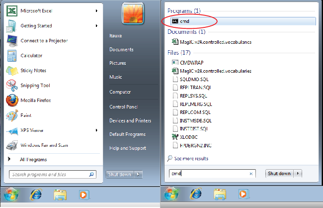
Note that the location of this program varies on various computers, so you may have to hunt around a little to find yours. Also, the actual ”prompt” will vary for different machines. The MacOS and Windows command line windows look like these:
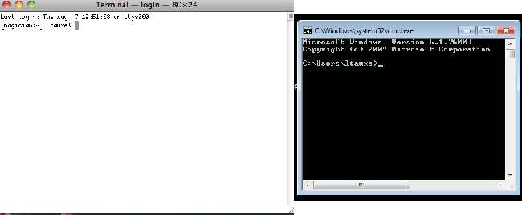
When you open one of these, you are working in your “home” directory. Fundamental to all
operating systems is the concept of directories and files. On windows-based operating
systems (MacOS or Windows), directories are depicted as “folders” and moving about is
accomplished by clicking on the different icons. In the world of terminal windows, the
directories have names and are arranged in a hierarchical sequence with the top directory
being the “root” directory, known as “/” (or C:
in Windows) and the file system looks something like this:
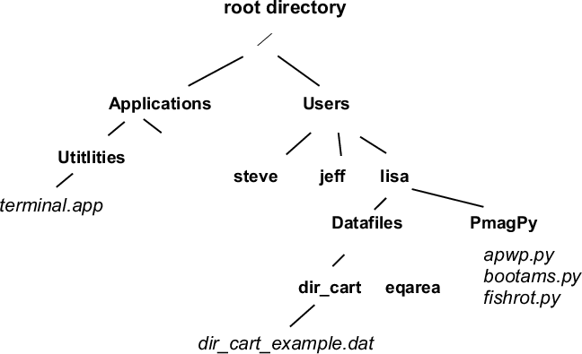
Within the root directory, there are subdirectories (e.g. Applications and Users in
italics. In any directory, there can also be “files” (e.g. dir_cart_example.dat in boldface). To
refer to directories, the operating system relies on what is called a “pathname”. Every
object has an “absolute” pathname which is valid from anywhere on the computer.
The absolute pathname in *NIX always begins from the root directory / and in
DOS (the operating system working in the Windows command line window), it is
C:
.
The absolute pathname to the home directory lisa in the figure is /Users/lisa. Similarly, the absolute pathname to the directory containing PmagPy scripts would be /Users/ltauxe/PmagPy. There is also a “relative” pathname, which is in reference to the current directory. If user “lisa” is sitting in her home directory, the relative pathname for the file dir_cart_example.dat in the directory datafiles would be dir_cart/foldtest_example.dat. When using relative pathnames, it is useful to remember that ./ refers to the current directory and ../ refers to the directory “above”.
Now you have found your command line and are comfortable in your home directory, you can view the contents of your directory with the Unix command ls or the DOS command dir. You can make a new directory with the command mkdir NEW_DIRECTORY_NAME (works in both Unix and DOS environments) and you can move into your new directory with the command cd NEW_DIRECTORY_NAME. To move back up into the home directory, just type cd .. remembering that .. refers to the directory above. Also, cd by itself will transport you home from where ever you are (there’s no place like home....). You can also change to any arbitrary directory by specifying the full path of the destination directory.
Unix and DOS have the ability to refer to a number of files and/or directories using “wildcards”. The wildcard for a single character is “?” and for any number of characters is “*”. For example, to refer to all the files with “.py” in their name in the PmagPy directory in my home directory, I would type:
To refer only a single character, we use the symbol ‘?’.
Programs that operate at the command line level print output to the screen and read input from the keyboard. This is known as “standard input and output” or “standard I/O”. One of the nicest things about working at the command line level is the ability to redirect input and output. For example, instead of typing input to a program with the keyboard, it can be read from a file using the symbol <. Output can either be put into a file using the symbol >, appended to the end of a file with >> or used as input to another program with the pipe facility (|).
Text editing is a blessing and a curse. You either love it or hate it and in the beginning, if you are used to programs like Word, you will certainly hate it. There are many ways of editing text and the subject is beyond the scope of this book. But you can’t use Word because the output is in a weird format that no scripting languages don’t read easily. So you have to use an editor that will produce a plain (ascii) file, like Notepad or TextWrangler. The latter is freeware available for Macs and the former comes standard in the Windows operating system.
Python can be painful to install (but so can all other programming environments). There are a few recipes that work for Mac OS (at least for 10.4 and later) and for Windows. These recipes and the ingredients are available through the website:
magician.ucsd.edu/Software/PmagPy.
Once Python is installed and you’ve found your command line, you will notice a “prompt”. The prompt will vary for different machines and may start with a ‘> (Windows), a ’%’ (c-shell) or a ‘$’ (bash). We will use a ’$’ or a ’%’ to indicate the prompt in this book. After the command prompt, type: python to start the interactive python shell. [Also, the symbol ctrl-D means to hold down the control key while typing the letter “d”. On Windows machines, you may have to substitute a letter “c” to achieve the same effect. ]
Everyone should now have the >>> prompt. Here is a transcript of a python interpreter session which should make a simple graph:
which produces the fascinating graph:
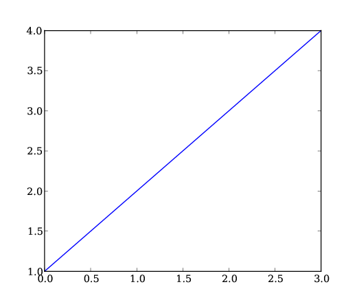
To kill the interpreter, close the plot window (red button) and type ctrl-D.
If you don’t get something about Enthought Python, you are probably using the standard Mac Os version, which has none of the whistles and bells we want (plotting, numerical packages, etc.), you’ll need to set your path properly. Look for hints at: http://magician.ucsd.edu/Software/Python.
As you have just fired up Python, you are in an interactive mode with the prompt >>>. Like Matlab, you can just start typing commands. After each command, press the return key and see what happens:
To get out of Python interactive mode and back to your beloved command line, type the control key (here-after ) and D at the same time. PC users may have to type C instead.
From your Fortran programming experience, you will recognize a,b, and c in the above session as variables and + as an operation. You may have been surprised that we didn’t declare variables up front (C programmers always have to). And, the variables above are obviously behaving as integers, not floating point variables (no decimals) but they are not letters between i and n. And there were funny lines that seemed to set three numbers at once:
Here are some rules governing variables and operations in Python:
O.K. First of all - how do you pronounce ‘NumPy’. According to Important People at Enthought (e.g, Robert Kern), it should be pronounced “Num” as in “Number” and “Pie” as in, well, pie, or Python. Oops. It is way more fun to say Numpee!
So, that out of the way, what can NumPy do for us? Turns out, a whole heck of a lot! But for now we will just scratch the surface. It can, for example, give us the value of π as numpy.pi. Note how the module name comes first, then the name of the function we wish to use. In this case, the function just returns the value of π.
To use NumPy functions, we must first “import” the module with the command import. The first time you do this after installing Python, it may take a while, but after that it should be very quick.
There are four styles of the import command which all do pretty much the same thing but differ in how you have to call the function after importing:
This makes all the functions in NumPy available to you, but you have to call them with the numpy.FUNC syntax.
This does the same as the first, but allows you to call NumPy anything you want - to save typing? To import all the functions from NumPy and not have to type numpy at all:
This imports all the umpty-ump functions, which is a heavy load on your memory, but you can also just import a few, like pi or sqrt:
Did you notice how sqrt(4) where 4 was an integer, returned a floating point variable (2.0)?
Good housekeeping Tip #1: I tend to import modules using the first option above. That way I know what module the functions I’m using are coming from - especially because we don’t know off-hand ALL the functions available in any given module and there might be conflicts with my own function names or two different modules could have the same function (like math and numpy).
Here is a (partial) list of some useful NumPy functions:
| absolute(x) | absolute value |
| arccos(x) | arccosine |
| arcsin(x) | arcsine |
| arctan(x) | arctangent |
| arctan2(y,x) | arctangent of y/x in correct quadrant (***very useful!) |
| cos(x) | cosine |
| cosh(x) | hyperbolic cosine |
| exp(x) | exponential |
| log(x) | natural logarithm |
| log10(x) | base 10 log |
| sin(x) | sine |
| sinh(x) | hyperbolic sine |
| sqrt(x) | square root |
| tan(x) | tangent |
| tanh(x) | hyperbolic tangent |
Note that in the trigonometric functions, the argument is in RADIANS!.You can convert from degrees to radians by multiplying by: numpy.pi/180.. Also notice how these functions have parentheses, as opposed to numpy.pi which has none. The difference is that these take arguments, while numpy.pi just returns the value of π.
If you are desperate, you can always use your Python interpreter as a calculator:
The time has come to talk about variable types. We’ve been very relaxed up to now, because we don’t have to declare them up front and we can often even change them from one type to another on the fly. But - variable types matter, so here goes. Like Fortran, Python has integer, floating point (both long and short), string and complex variable types. It is pretty clever about figuring out what is required. Here are some examples:
Try doing math with these!
Lesson learned: you can’t add a number and a string. and string addition is different! But you really have to be careful with this. If you multiply a float by an integer, it is possible that you will convert the float to an integer when you really wanted all those numbers after the decimal! So, if you want a float, use a float.
You can convert from one type to another (if appropriate) with:
long() converts to a double precision floating point and complex() converts the two parts to a complex number.
There is another kind of variable called “boolean”. These are: true, false, and, or, and not For the record, the integer ‘1’ is true and ‘0’ is false. These can be used to control the flow of the program as we shall learn later.
In Fortran, you encountered arrays, which was a nice way to group a sequence of numbers that belonged together. In Python of course we also have arrays, but we also have more complicated data structures, like lists, tuples, and dictionaries, that group arbitrary variables together, like strings and integers and floats - whatever you want really. We’ll go through some attributes of the various data structures, starting with lists.
Examples:
To slice out a chunk of the middle of a list:
This takes items 2 and 3 out (note it takes out up to but not including the last item number - don’t ask me why). Or, we can slice it this way:
which takes from the fourth item (starting from 0!) to the end.
To copy a list BEWARE! You can make a copy - but it isn’t a copy like in Fortran, but it is just another name for the SAME OBJECT, so:
See how mycopy got changed when we changed mylist? To spawn a new list that is a copy, but an independent entity:
Now try:
So now mycopy stayed the way it was, even as mylist changed.
Unlike Fortran, Python is “object oriented”, a popular concept in coding circles. We’ll learn more about what that means later, but for right now you can walk around feeling smug that you are learning an object oriented programming language. O.K., what is an object? Well, mylist is an object. Cool. What do objects have that might be handy? Objects have “methods” which allow you to do things to them. Methods have the form: object.method()
Here are two examples:
For a complete list of methods for lists, see: http://docs.python.org/tutorial/datastructures.html#more-on-lists
Numbers are numbers. While there are more kinds of numbers (complex, etc.), strings can be more interesting. Unlike in Fortran, they can be denoted with single, double or triple quotes: e.g., ‘spam’, “Sam’s spam”, or
Strings can be added together (newstring = ’spam’ + ’alot’). They can be sliced (newerstring = newstring[0:3]). but they CANNOT be changed in place - you can’t do this: newstring[0]=’b’. To find more of the things you can and cannot do to strings, see: http://docs.python.org/tutorial/introduction.html#strings
What? Tuples? Tuples consist of a number of values separated by commas. They are denoted with parentheses.
Tuples are sort of like lists, but like strings, their elements cannot be changed. However, you can slice, concatenate, etc. For more see:
http://docs.python.org/tutorial/datastructures.html#tuples-and-sequences
Dictionaries are denoted by {}. They are also somewhat like lists, but instead of integer indices, they use alphanumeric ‘keys’: I love dictionaries. So here is a bit more about them.
To define one:
To return the value associated with a specific key:
To change a key value:
To add a new key value:
Dictionaries also have some methods. One useful one is:
which returns a list of all the keys.
For a more complete accounting of dictionaries, see:
http://docs.python.org/tutorial/datastructures.html#dictionaries
Arrays in Python have many similarities to lists. Unlike lists, however, arrays have to be all of the same data type (dtype), usually numbers (integers or floats), although there appears to be something called a character array. Also, the size and shape of an array must be known a priori and not determined on the fly like lists. For example we can define a list with L=[], then append to it as desired, but not so arrays - they are much pickier and we’ll see how to set them up later.
Why use arrays when you can use lists? They are far more efficient than lists particularly for things like matrix math. But just to make things a little confusing, there are several different data objects that are loosely called arrays, e.g., arrays, character arrays and matrices. These are all subclasses of ndarray. I’m just going to briefly introduce arrays and matrices here.
Here are a few ways of making arrays:
Note the difference between linspace(start,stop,N) and arange(start,stop,step). The function linspace creates an array with 14 evenly spaced elements between the start and stop values while arange creates an array with elements at colorbluestep intervals between the starting and stopping values. In some of the online examples you will find the short-cuts for arange() and linspace as r_(-5,5,20j) and r_(-5,5,1.) respectively.
Python arrays have methods like dtype, ndim, shape, size, reshape(), ravel(), transpose() etc. Did you notice how some of these require parentheses and some don’t? The answer is that some of these are functions and some are classes, both of which we will get to later.
Let’s see what the methods can do. First, arrays made in the above example are of different data types. To find out what data type an array is, just use the method dtype as in:
And of course arrays, unlike lists have dimensions and shape. Dimensions tell us how many axes there are with axes defined as in this illustration:
As shown above our A array has two dimensions (axis 0 and 1). To get Python to tell us this, we use the ndim method:
Notice how zeros, ones and ndarray used a shape tuple in order to define the arrays in the examples above. The shape of an array is how many elements are along each axis. So, naturally we see that the C array is a 2x3 array. Python returns a tuple with the shape information using the shape method:
Let’s say we don’t want a 2x3 array for the sequence in the array C, but we want a 3x2 array. Python can reshape an array with a different shape tuple like this:
And sometimes we just want all the elements lined up along one axis. We could do that with reshape of course using a tuple with the size of the array (the total number of elements). You can see that this is 6 here. We could even get python to tell us what the size is (C.size) and use that in the reshape size tuple. Alternatively we can use the ravel() method which doesn’t require us to know the size in advance:
There are other ways to reshape, slice and dice arrays. The syntax for slicing of arrays is similar to that for lists:
Lots of applications in Earth Science require the transpose of an array:
Also, we can concatenate two arrays together with the - you guessed it - concatenate() method. For a lot more tricks with arrays, go to the NumPy Reference website here: http://docs.scipy.org/doc/numpy/reference/.
To convert the A array to a list: L=A.tolist(), from a list or tuple to an array: A=numpy.array(L), or from a list, a tuple or an array to a NumPy array: a=numpy.asarray(L))
First a review of lists. You will recall that in python, indexing starts with 0, so for the list L=[0,2,4,6,8], L[1] is 2. The index of the last item is -1, so L[-1]=8. To find out what the index for the number 4 is, for example, we have the index() method: L.index(4), which will return the number 2. We actually already used this method when we implemented command line arguments, but it wasn’t really explained. We know that to reassign a given index a new value we use the syntax L[1]=2.5. And to use a part of a list (a slice) we use, e.g., B=L[2:4], which defines B as a list with L’s elements 2 and 3 (4 and 6). And you also know that B=L[2:] takes all the elements from 2 to the end. From these examples, you can infer that the basic syntax for slicing is [start:stop:step]; if the step is omitted it is assumed to be 1.
Arrays (and matrices) work in a similar fashion to lists, but these are multidimensional objects, so things get hairy fast. The basic syntax is the same: [start:stop:step], or i:j:k. but with Python arrays, we step through all the j’s for each i at step k. This is best shown with examples:
Let’s pick about the statement B[1:3,:-1:2] to see if we can understand what it does. The first part alone returns lines 2 and 3:
Here j goes from [:-1], in other words, we all but the last element:
And finally, we have the step of 2, which takes every other element:
For more on array slicing (indexing), see:
http://docs.scipy.org/doc/numpy/reference/arrays.indexing.html
Earlier in the course, we learned that for loops with lists just step through item by item. In n-dimensional arrays, they steps through row by row (like in slicing). For example,
If you really want to step through element by element, you can use the ravel() method which flattens an N-dimensional array to a single dimension:
For more on looping (or iterating), see:
http://docs.scipy.org/doc/numpy/reference/arrays.nditer.html
Are you tired of typing yet? Python scripts are programs that can be run and re-run from the command line. You can type in the same stuff you’ve been doing interactively into a script file (ending in .py). You can edit scripts with your favorite text editor (NOT Word!). And then you can run them like this:
On a Mac or Unix system, you can put in a header line identifying the script as python (#!/usr/bin/env python), make it executable (chmod a+x) and run it like this:
On PCs, you can just type the name of the script without the header or the chmod command. But, because PCs don’t come standard with a cat command, you have to create the file with Notepad, instead of with cat for all the examples using cat.
Here is an example that creates a script using the Unix cat command, makes it executable and then runs it:
In a Python script on Unix machines (including MacOS), the first line MUST be:
so that the file is interpreted as Python. Unlike Fortran or C, you CANNOT start with a comment line (try switching lines 1 and 2 and see what happens).
The second line is a comment line. Anything to the right of # is assumed to be a comment (Remember that in Fortran ! serves the same function).
Notice that print goes by default to your screen. Because the message is a string, you can use single or double quotes for the test message. You can get an apostrophe in your output by using double quotes and quote marks by using single quotes, i.e.,
produces:
In the second print statement, the \’ is necessary to prevent an error (try it). This is an example of a Python ‘escape code’. These are used to escape some special meaning, as in an end-quote for a string in this example. We use the backslash to say that we really really want a quote mark here. Other escape codes are listed here:
http://www.python-course.eu/variables.php
Here’s another example of a program - this one has an typo in line 4:
You had intended to type ’abeg’ but typed ’abge’ instead. When you run the program, you get an error message:
Error messages are a desirable feature of Python. You don’t want the program to run by assigning some arbitrary value to abge and giving you a wrong answer. Yet many languages will do exactly that, including Fortran (we can avoid this potential problem in Fortran by using the ’implicit none’ statement at the beginning our our programs).
Any reasonable programming language must provide a way to group blocks of code together, to be executed under certain conditions. In Fortran, for example, there are if statements and do loops which are bounded by the statements if, endif and do, endo respectively. Many of these programs encourage the use of indentation to make the code more readable, but do not require it. In Python, indentation is the way that code blocks are defined - there are no terminating statements. Also, the initiating statement terminates in a colon. The trick is that all code indented the same number of spaces (or tabs) to the right belong together. The code block terminates when the next line is less indented. A typical Python program looks like this:
Exceptions to the code indentation rules are:
Good housekeeping Tip #2: Always use only spaces or only tabs in your code indentation. I use only spaces because I use vi to write my code. Others use Xcode, the Python IDLE program, or TextWrangler to write their code and some of these things use tabs by default. Whatever you do BE CONSISTENT because tabs are not the same as spaces in Python even if you can’t tell the difference just by looking at it.
In the following, I’ll show you how Python uses code blocks to create “do” and “while” loops, and “if” statements.
Here is an example of a “for loop” that is similar to the way you would do it in Fortran. :
This script creates the list mylist with the line mylist=[42,‘spam’,‘ocelot’]. The length of mylist is an integer value returned by len(mylist). The script uses this integer as the ‘stop’ value in the range() function, which returns a list of integers from 0 to the stop value MINUS ONE at intervals of one. [ The minus one convention is hard to get use to for Fortran programmers, but it is typical of Python syntax (and also of C) so just deal with it.] Anyway, range(start,stop,step) is just like numpy.arange(start,stop,step) but returns integers instead of floats. Also, like numpy.arange(), there is a short hand form when the minimum is zero and the interval is one, so we could (and will) just use the command range(stop).
Python makes i step through the list of numbers from 0 to 2, printing the ith element of mylist. Note how the print command is indented - this is the program block that is executed for each i. Note also that the line could have been on the previous line after the colon, because there is only one line in the program block. But never-mind, this way works too and is more Fortran like. When i finishes it’s business, the program block terminates. At that point, the program prints out the ’All done’ string. There is no “enddo” statement or equivalent in Python.
But, Python is far more fun than the Fortran-like for i in syntax in the above code snippet. In Python we can just step through a list directly. Here is another script which does just that (why not?):
Note that of course we could have used any variable name instead of ‘item’, but it makes sense to use variable names that mean what they do. It is easier to understand what ‘item’ stands for than just the Fortran style of i.
Here is an example with a little more heft to it. It creates a table of trigonometry functions, spitting them out with a formatted print statement:
Let’s pick this one apart a bit. First, notice the use of the variable deg2rad to convert from degrees to radians. Also notice how deg2rad is defined: deg2rad = np.pi/180. using the NumPy function for π and the decimal point after 180. While in this case, it makes absolutely no difference (try it!), it is a good practice to use real numbers if you want your variable to stay real. In fact:
Good housekeeping Tip #3: Always use a decimal if you want your variable to be a floating point variable.
The expression ctheta = np.cos(theta*deg2rad) uses the numpy cosine function. Ideally theta should be a real variable while in fact it is an integer in this expression, but fortunately Python figures that out and converts it to a real. Note that we could have also converted theta to a float first with the command float(theta).
To make the output look nice, we do not use
which would space the numbers irregularly among the columns and put out really long numbers. Instead, we explicitly specify the output format. The output format is given in the quotes. The format for each number follows the %, 5.1f is for 5 spaces of floating point output, with 1 space to the right of the decimal point (in Fortran this is f5.1). The single blank space between %5.1f and %8.4f is included in the output, in fact any text there is reproduced exactly in the output, thus to put commas between the output numbers, write:
Tabs (\t) would be formatted like this:
The “for loop” is just one way of controlling flow in Python. There are also if and while code blocks. These execute code blocks the same way as for loops (colon terminated top statements, indented text, etc.). For both of these, the code block is executed if the top statement is TRUE. For the “if” block, the code is executed once but in a “while” block, the code keeps executing as long as the statement remains TRUE.
The key to flow control therefore is in the top statement of each code block; if it is TRUE, then execute, otherwise skip it. To decide if something is TRUE or not (in the boolean sense), we need to evaluate a statement using comparisons. You know all about comparisons from Fortran. Python of course also has comparisons and they work in similar ways with a few differences. Here’s a handy table with comparisons (relational operators) in different languages:
| F 77 | F90 | C | MATLAB | PYTHON | meaning |
| .eq. | == | == | == | == | equals |
| .ne. | /= | != | ~= | != | does not equal |
| .lt. | < | ¡< | < | < | less than |
| .le. | <= | <= | <= | <= | less than or equal to |
| .gt. | > | > | > | > | greater than |
| .ge. | > = | > = | > = | > = | greater than or equal to |
| .and. | .and. | & | & | and | |
| .or. | .or. | —— | — | or | |
These operators can be combined to make complex tests. Here is a juicy complicated statement:
There are rules for the order of operations for these things like, multiplication gets done before addition. But these are easy to forget. You can look it up in the documentation if you are unsure or, better, just put in enough parenthesis to make it completely clear to anyone reading your code.
Good housekeeping Tip #4: Use parentheses liberally - make the order of operation completely unambiguous even if you could get away with fewer.
One nice aspect of Python compared to C is that if you make a mistake and type, for example,
you will get an error message during compilation. In C this is a valid statement with a completely different meaning than is intended!
The simplest ‘if’ block works just like we have described:
However, as in Fortran (and C and any other reasonable programming language), there are whistles and bells to the ‘if’ code blocks. In Python these are: elif and else. As in the Fortran equivalent else if, the elif code block gets executed if the top if statement is FALSE and the elif statement is TRUE. If both the top if and the elif statements are FALSE but the else statement is TRUE, then Python will execute the block following the else. Consider these examples:
As already mentioned, the ‘while’ block continues executing as long as the while top statement is TRUE. In other words, the if block is only executed once, while the while block keeps looping until the statement turns FALSE. Here are a few examples:
All of these program blocks can also be done in an interactive session also using indentation. The interactive shell responds with ’.....’ instead of ’>>>’ once you type a statement it recognizes as a top statement. To signal that you are done with the program block, simply hit return:
Python would be no better than a rather awkward graphing calculator (and we haven’t even gotten to the graphing part yet) if we couldn’t read data in and spit data out. You learned a rudimentary way of spitting stuff out already using the print statement, but there is a lot more to file I/O in Python. We would like to be able to read in a variety of file formats and output the data any way we want. In the following we will explore some of the more useful I/O options in Python.
If you are using Python interactively or want interactivity in a script, use the command: raw_input(). It acts as a prompt and reads in whatever is supplied prior to a return as a string.
In this example, the variable ans will be read in as a string variable, converted to a float and appended to the list, X. raw_input() is a simple but rather annoying way to enter things into a program. Another (less annoying) way is put the data in a file (e.g., myfile.txt) with cat, paste, Excel (saved as a text file), or whatever and read it into Python. The approach to this is similar to Fortran: we must first open the file, then read it in and parse lines into the desired variables.
To open a file we use the command open(), one of Python’s built-in functions. For a complete list of these, see:
http://docs.python.org/library/functions.html
The open() function returns an object, complete with methods, like readlines() which, yes, reads all the lines. Here is a script (ReadStations.py that will open the file station.list from the chapter on GMT, read in the data and print it out line by line.
If you run this script, you will get this behavor:
The function open() has some bells and whistles to it and has the form open(name[, mode[, buffering]) where the stuff in square brackets is optional. The ‘name’ argument is the file name to open and ‘mode’ is the way in which it should be opened, most commonly for reading ’r’, writing ’w’ or appending ’a’. I use the form ’rU’ for unformatted reading because I often want to read in files that were saved in Dos, Mac OR Unix line endings and ’rU’ figures all that out for you. Just in case you are curious, Unix lines end in ’\n’, Mac files in ’\r’ and Dos (and windows) lines end in ’\r\n’. I never use the ’buffering’ argument and don’t know what it does.
If you are curious about the line endings, try typing out the ‘representation’ of the line repr(line) in the above script and you get all the stuff that is normally invisible like the apostrophes and the line terminations:
Notice how in our first version, printing the line also printed the line feed (\n) as an extra line. To clean this off of each line, we can use the string strip() function:
Putting this into the code results in this behavior:
Let’s say you want to read in the data table into lists called Lats, Lons, and StaIDs (the first three columns). You need to split each line into its columns and append the correct column into the appropriate list. Fortran automatically splits on the spaces so you probably didn’t have to worry about this sort of thing yet, but Python reads in the entire line as a string and ignores the spaces or other possible delimiters (commas, semi-colons, tabs, etc.). To split the line, we use the string function split([sep]) where [sep] is an optional separator. If no separator is specified (e.g., line.split()), it will split on spaces. Anything could be a separator, but the most common ones are ’,’, ’;’, and ’\t’. The latter is how a tab appears if you were to, say, print out the representation of the line, which shows all the invisibles.
Here is a slightly modified version of ReadStations.py, ParseStations.py which parses out the lines and puts numbers (floats or integers) in the right lists:
As in Fortran, Python can also read from standard input. To do this, we need a system specific module, called sys which among other things has a stdin method. So, instead of specifying a file name in the open command, we could substitute the following line:
The program can be invoked with:
We could also use command line switches by reading in arguments from the command line. In the following example, we use the switch ’-f’ with the following argument begin the file name:
This version can be invoked with:
In the special case where the data in a file are entirely numeric, you can read in the file with a special numpy function loadtxt(). This reads the data into a list whereby each element of the list is a list of numbers from each line.
Let’s say I have a Python module that will convert latitudes and longitudes to UTM coordinates. O.K. I really do have one that I downloaded from here:
http://code.google.com/p/pyproj/issues/attachmentText?id=27&aid=
-80884174771817564 &name=UTM.py&token=46ab62caa041c3f240ca0e55b7b25ad6
I wrote a script (ConvertStations.py) to convert each of the stations in my list to their UTM equivalents (assuming these were in a WGS-84 ellipsoid). It would be nice if after having done this to the data, I could then write it out somehow, preferably to a file. Of course I could use the print command like this:
which spits out something like this:
I could save the output with a UNIX re-direct:
But we yearn for more. So, more elegantly, I can open an output file [for appending ‘a’ or (over)writing ’w’] write a formatted string using the write method on the output file object with format string:
The only significant changes are 1) the object outfile is opened for writing. Note that this will clobber anything in a pre-existing file by that name and 2) the output file gets written to in the statement with a write method on the output file object:
The write statement uses the syntax: ’format string’%(list of variables tuple). Format strings have these rules:
A session using the script (ConvertStations2.py and a peek at the resulting file could look like this:
The Unix head command types out the first 10 lines of a file but has no DOS equivalent.
So far you have learned how to use functions from program modules like NumPy. You can imagine that there are many bits of code that you might write that you will want to use again and again, say converting between degrees and radians and back, or finding the great circle distance between two points on Earth, or converting between UTM and latitude/longitude coordinates (as in UTM.py, my new favorite package). The basic structure of a program with a Python function is:
The first line must have ’def’ as the first three letters, must have a function name with parentheses and a terminal colon. If you want to pass some variables to the function, they go where in_arg sits, separated by commas. There are no output variables here.
There are four different ways to handle argument passing.
1) You could have a function that doesn’t need any arguments at all:
2) You could use a set list of what are called ‘formal’ variables that must be passed:
3) You could have a more flexible need for variables. You signal this by putting *args in the in_args list (along with any formal variables you want):
4) You can use a keyworded, variable-length list by putting **kwargs in for in_args:
Although you can certainly write functional code without a document string, make a habit of always including one. Trust me - you’ll be glad you did. This can later be used to remind you of what you thought you were doing years later. It can be used to print out a help message by the calling program and it also let’s others know what you intended. Notice the use of the triple quotes before and after the documentation string - that means that you can write as many lines as you want.
This part of the code must be indented, just like in a for loop, or other block of code.
You don’t need this unless you want to pass back information to the calling body (see, for example print_kwargs() above). Python separates the entrance and the exit. See how it can be done in the gimme_pi() example above.
It is considered good Python style to treat your main program block as a function too. (This helps with using the document string as a help function and building program documentation in general.) In any case, I recommend that you just start doing it that way too. In this case, we have to call the main program with the final (not indented) line main():
Notice how in the above examples, all the functions preceded the main function. This is because Python is an interpreter and not compiled - so it won’t know about anything declared below as it goes through the script line by line. On the other hand, we’ve been running lots of functions and they were not in the program we used to call them. The trick here is that you can put a bunch of functions in a separate file (in your path) and import it, just like we did with NumPy. Your functions can then be called from within your program in the same way as for NumPy.
So let’s say I put all the above functions in a file called myfuncs.py:
I could then just import the module myfuncs from within another program, or just interactively. I can use the functions, or just call for help:
Inside a function, variable names have their own meaning which in many cases will be different from inside the calling function. So, variables names declared inside a function stay in the function. This is true unless you declare them to be “global”. Here is an example in which the main program “knows” about the functions variable V:
In addition to being able to write your own functions, of course Python has LOTS of modules and a gazzillion functions. The enthought distribution that you are using Includes plotting, numerical recipes, trig functions, image manipulation, animation, and many more.
Before we go any further, we need to learn some basic concepts about classes. These are the basis of “object oriented programming” OOP (that again!). Class objects lie behind plotting, for example and a rudimentary understanding of what they are and how they work will come in handy when we start doing anything but the simplest plotting exercises.
A class object is created by a call to a “class definition” which which can be thought of as a blueprint for the class object. Here is an simple example of a class definition:
Saving this class in a file called Shapes.py we can use it in a Python session in a manner similar to function modules:
In spite of superficial similarities, classes are not the same as functions. Although the Shape module is imported just the same as any other, to use it, we first have to create a class “instance” (C=Shapes.Circle(r)). C is an object with “attributes” (variables) and “methods”. All methods (parts that start with “def”), have an argument list. The first argument has to be a reference to the class instance itself, or “self”, followed by any variables you want to pass into the method. So the __init__ method initializes the instance attributes of an object. In the above case, it defined the attribute r, which gets passed in when the class is first called. Asking for any attribute (note the lack of parentheses), retrieves the current value of that attribute. Attributes can be changed (as in C.r=2.0).
The other methods (area and circumference) are defined like any function except note the use of ’self’ as the first argument. This is required in all class method definitions. In our case, no other parameters are passed in because the only one used is r, so the argument list consists of only self. Calling these methods returns the current values of these methods.
You can make a subclass (child) of the parent class which has all the attributes and methods of the parent, but may have a few attributes and methods of its own. You do this by setting up another class definition within a class.
So, the bottom line about classes is that they are in the same category of things as variables, lists, dictionaries, etc. That is, they are ‘data structures’ - they hold data, and the methods to process that data. If you are curious about classes, there’s lots more to know about classes that we don’t have time to get into, but you can find useful tutorials online:
(e.g., http://www.sthurlow.com/python/lesson08/)
So far you have learned the basics of Python, and NumPy. But Python was sold as a way of visualizing data and we haven’t yet seen a single plot (except a stupid one in the beginning). There are many plotting options within the Python umbrella. The most mature and the one I am most familiar with is matplotlib, a popular graphics module of Python. Actually matplotlib is a collection of a bunch of other modules, toolkits, methods and classes. For a fairly complete and readable tour of matplotlib, check out these links:
http://matplotlib.sourceforge.net/Matplotlib.pdf
and here:
http://matplotlib.sourceforge.net/
Let’s start by reviewing the simple plot script (matplotlib1.py):
The first step should be obvious by now, it imports matplotlib. Figures are rendered on “backends” so they appear on screen. There are a lot of different back-ends with slightly different looks. Some work better on different operating systems. I use the very old school backend called “TkAgg” backend because it “works”. So step 2 sets the backend: matplotlib.use(“TkAgg”). The module matplotlib itself contains a lot of other modules. One of these, pylab is the “business end” that has a lot of plotting methods and classes. It must be loaded alongside matplotlib, so step 3 is: import pylab. After that the fun starts.
In the above example, we call the plot method with a list as an argument. As I mentioned, matplotlib uses the concept of “classes” to make plots and this has just happened behind the scenes. We could have named the plot instance with a the figure() method (e.g., fig=pylab.figure()) and then referred to it later with the command fig.plot([1,2,3]), but we don’t have to in this simple case - the class instance is implied and is the “current plot”. You can tell this, if you do the above example in interactive mode:
The bit about [<matplotlib.lines.Line2D object at 0x4bd6eb0>] is Python’s way of telling you that you just created an object and something about it. In any case, when you give plot() a single sequence of values (as above), it assumes they are y values and supplies the x values for you.
Attributes of the pylab class, such as the Y axis label can be changes with the ylabel method. As you can imagine, there are LOTS of methods, including, surprise, an xlabel method.
When we are done customizing the plot instance, we can view it with the show method. When that gets executed, we will get a plot something like this:
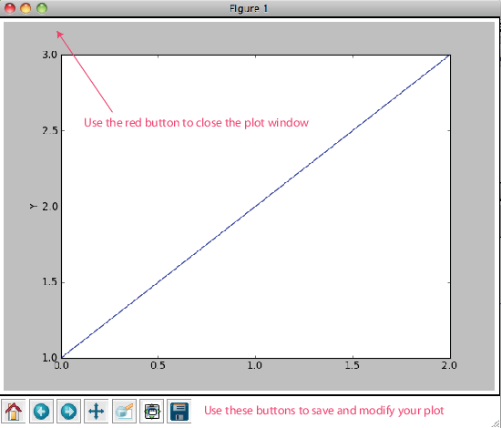
Once that happens, we won’t be able to change the plot any more and in fact, we won’t get our terminal back until the little plot window is closed. You can save your plot with the little disk icon in a variety of formats. Adobe Illustrator likes .svg, or .eps while Microsoft products like .png file formats.
If you find it annoying to always have to close figures with the little red button, or save them with the disk icon, you can tweak the program like this:
The method pylab.savefig(FILENAME.FMT). The .FMT can be one of several, e.g., .eps, .svg, .ps, .pdf, .png, .gif, .jpg, etc.). Some of these (the vector graphics ones like pdf, ps, eps and svg) can be opened in Adobe Illustrator for modification.
As mentioned earlier, if you give plot() a single sequence of values, it assumes they are y values and supplies the x values for you. Garbage in, garbage out. But plot() takes an arbitrary number of arguments of the form: (X1,Y 1, line_style_1, X2,Y 2, line_style_2, etc.), where ’line_style’ is a string that specifies the line style as illustrated in this script called matplotlib2.py
which produces the plot:
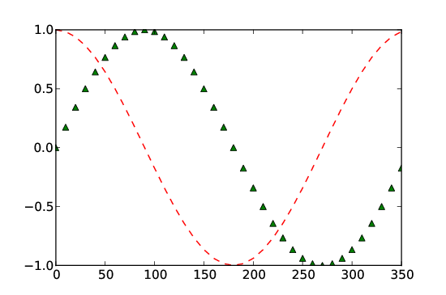
From the code, you can probably figure out that a line style of ’r–’ is a red dashed line, and ’g^’ are green triangles. There are many other attributes that can be controlled: linewidth, dash style, etc. and I invite you to check out the matplotlib documentation.
By now, you should understand enough about classes, keyword argument passing and other pythonalia to be able to figure things out on your own. But don’t panic, I’m going to lead you through a few more examples, which I hope will speed you on your plotting way.
As already mentioned, pylab has the concept of “current figure” which subsequent commands refer to. In the preceding examples, we only had one figure, so we didn’t have to name it, but for fancier figures with several plots, we can create named figure objects by invoking a figure instance:
Notice the syntax whereby figsize is a method with width and height (in inches) specified by a tuple and fignum is the figure number. Notice that these are keyword arguments, and that there are many more: consult the list of **kwargs in the online documentation located here:
http://matplotlib.sourceforge.net/api/pyplot_api.html#matplotlib.pyplot.figure
Once we have a figure instance (sometimes called a “container”), we can do all kinds of things, including adding subplots. To do this, we can use the syntax:
Here the argument 211 means 2 rows, one column and this is the first plot. To make plots side by side, you would use: fig.add_subplot(121) for 1 row, two columns, etc.
After each add_subplot command, that subplot becomes the current figure for plotting on. If you want more freedom, say, you want to make a subplot at an arbitrary place, use the add_axes([left, bottom,width, height]) 0 method, e.g., add_axes([0.1,0.1,0.7,0.3]). The values are 0-1 in relative figure coordinates.
To illustrate these new concepts, consider the example code, matplotlib3.py:
which produces:
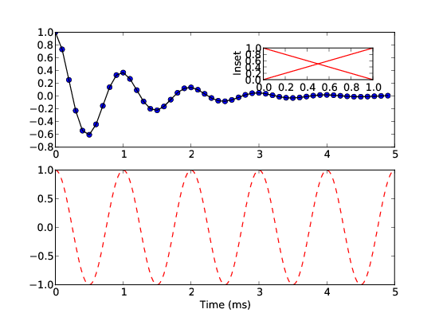
By now, you should be able to figure out what everything in that script does by yourself!
We already met xlabel and ylabel. But text can be added in a other ways, e.g., using the title, text, legend and arrow methods. Let’s decorate one of our early examples to show how some of these things work:
which produces this plot:
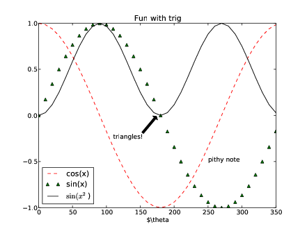
The title appears at the top of the plot. Text labels get places at the x and y coordinates on the plot and the legend will appear in the upper/lower right/left corner as specified in the string. The pylab.text(x,y,string, kwargs) method also has optional key word arguments, specifying font, size, color and the like. The legend ’labelist’ is a list of labels for each plot element. So, every line or point style that you want in your legend, append a label to the label list after the relevant plot command. Also note that the legend and xlabel methods use a special format for strings (r’LateX String’) which allows embedded LaTeX equation syntax to make scientific equations look right - so now you have to learn LaTeX!. Finally, the arrow gets drawn with the annotate method, which has a lot of other attributes as well. Check the matplotlib documentation for details.
There are lots of graphing styles possible with matplotlib, e.g., histograms, pie charts, contour plots, whisker plots, etc. I’m just going to show you a few examples. The best thing to do is to look through the online documentation for a plot that looks like what you need, then modify it. This is ALWAYS a good approach - start with something that works and fiddle with it until it suits your own particular needs.
Although there is much much more to do in Python, this documentation is aimed at getting and using PmagPy, so let’s move on.
The MagIC database is designed to have two web portals, one for paleomagnetic data (PMAG) and one for rock magnetic data (RMAG). If you click on the PMAG PORTAL link, you will see a link labeled “Open the data tab to Start searching” which, if you click on it, takes you to the main MagIC search engine. You can look for data from a particular reference by typing in the author’s name in the “Reference Text Search” box, or search by any column with a little magnifying glass icon. Once the data you want have been identified, you can download the whole data set for example by clicking on the icon for the textfile:
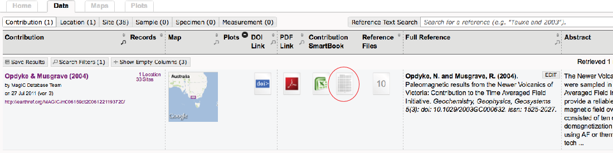
After downloading, the data can be unpacked and examined using various tools in the PmagPy programs described later.
Paleomagnetic and rock magnetic data are collected and analyzed in a wide variety of ways with different objectives. Data sets can be extremely large or can be the barest boned data summaries published in legacy data tables. The goal of MagIC has been to have the flexibility to allow a whole range of data including legacy data from publications or other databases to new studies which include all the measurements, field photos, methodology, and so on. The general procedure for the future will be to archive the data at the same time that they are published. So, to smooth the path, it is advisable to put your data into the MagIC format as early in the process as possible. All data that enters the database must pass through an Excel spreadsheet, called the MagIC Console. This program allows you to open a “smartbook” which comprises some 30 tables each with dozens of column headings (meta-data). Data are assembled in a MagIC template file, checked for consistency and completeness, then exported to text and excel files. These can then be uploaded into the MagIC database. Data can either be entered directly into the Console, or can be prepared into a strictly formatted ascii file behind the scenes which can be imported into the Console late in the process. In this book we illustrate the use of a number of programs (the PmagPy package in Python) to facilitate the process.
The MagIC database is organized around a series of data tables. The complete data model can be found here: http://earthref.org/MAGIC/metadata.htm. Here is a brief introduction to the data model.
Each MagIC table has a one line header of the form:
tab table_name
“tab” (or “tab delimited”) means that the table is tab delimited. In theory other delimiters are possible, but PmagPy only uses tab delimited formats. The table_name is one of the table names. The tables are of four general types: EarthRef tables (er_) shared in common with other EarthRef databases, MagIC tables (magic_ tables common to both rock magnetic and paleomagnetic studies, Paleomagnetic tables (pmag_), data reduction useful in paleomagnetic studies, Rock Magnetic tables (rmag), data reduction useful for rock magnetic studies. Most studies use only some of these tables. Here are some useful tables for a typical paleomagnetic study:
| table | Brief description |
| er_locations | geographic information about the location(s) of the study |
| er_sites | locations, lithologic information, etc. for the sampling sites |
| er_samples | orientation, sampling methods, etc. for samples |
| er_specimens | specimen weights, volumes |
| er_ages | Ages information. |
| er_images | images associated with the study (field shots, sample |
| photos, photomicrographs, SEM images, etc. | |
| er_citations | citation information |
| er_mailinglist | contact information for people involved in the study |
| magic_measurements | measurement data used in the study |
| magic_methods | methods used in the study |
| magic_instruments | instruments used in the study |
| pmag_specimens | interpretations of best-fit lines, planes, paleointensity, etc. |
| pmag_samples | sample averages of specimen data |
| pmag_sites | Site averages of sample data |
| pmag_results | Averages, VGP/V[A]DM calculations, stability tests, etc. |
| pmag_criteria | criteria used in study for data selection |
| rmag_susceptibility | Experiment for susceptibility parameters |
| rmag_anisotropy | summary of anisotropy parameters |
| rmag_hysteresis | summary of hysteresis parameters |
| rmag_remanence | summary of remanence parameters |
| rmag_results | Summary results and highly derived data |
| products (critical temperatures, etc.) | |
| rmag_criteria | criteria used in study for data selection |
The second line of every file contains the column headers (meta-data) describing the included data. For example, a er_sites table might look like this:
| tab er_sites | |||||
| er_site_name | er_location_name | site_lithology | site_type | site_lat | site_lon |
| AZ01 | Azores | basalt | lava flow | 37.80 | -25.80 |
| ... | |||||
Although data can be entered directly into the MagIC Console, it is easier to generate the necessary tables as a by-product of ordinary data processing without having to know details of the meta-data and method codes. The following appendix describes how to use the PmagPy software for data analysis and generate the MagIC data tables automatically for the most common paleomagnetic studies involving directions and/or paleointensities.
| LT-AF-D | Lab Treatment | Alternating field: Double demagnetization |
| with AF along X,Y,Z measurement | ||
| followed by AF along -X,-Y,-Z measurement | ||
| LT-AF-G | Lab Treatment | Alternating field: Triple demagnetization |
| with AF along Y,Z,X measurement | ||
| followed by AF along Y and AF along Z measurement | ||
| LT-AF-I | Lab Treatment | Alternating field: In laboratory field |
| LT-AF-Z | Lab Treatment | Alternating field: In zero field |
| LT-CHEM | Lab Treatment | Cleaning of porous rocks by chemical leaching with HCl |
| LT-FC | Lab Treatment | Specimen cooled with laboratory field on |
| LT-HT-I | Lab Treatment | High temperature treatment: In laboratory field |
| LT-HT-Z | Lab Treatment | High temperature treatment: In zero field |
| LT-IRM | Lab Treatment | IRM imparted to specimen prior to measurement |
| LT-LT-I | Lab Treatment | Low temperature treatment: In laboratory field |
| LT-LT-Z | Lab Treatment | Low temperature treatment: In zero field |
| LT-M-I | Lab Treatment | Using microwave radiation: In laboratory field |
| LT-M-Z | Lab Treatment | Using microwave radiation: In zero field |
| LT-NO | Lab Treatment | No treatments applied before measurement |
| LT-NRM-APAR | Lab Treatment | Specimen heating and cooling: Laboratory |
| field anti-parallel to the NRM vector | ||
| LT-NRM-PAR | Lab Treatment | Specimen heating and cooling: Laboratory |
| field parallel to the NRM vector | ||
| LT-NRM-PERP | Lab Treatment | Specimen heating and cooling: |
| Laboratory field perpendicular to the NRM vector | ||
| LT-PTRM-I | Lab Treatment | pTRM tail check: After zero field step, |
| perform an in field cooling | ||
| LT-PTRM-MD | Lab Treatment | pTRM tail check: After in laboratory field step, |
| perform a zero field cooling at same temperature | ||
| LT-PTRM-Z | Lab Treatment | pTRM tail check: After in laboratory field step, |
| perform a zero field cooling at a lower temperature | ||
| LT-T-I | Lab Treatment | Specimen cooling: In laboratory field |
| LT-T-Z | Lab Treatment | Specimen cooling: In zero field |
| LT-VD | Lab Treatment | Viscous demagnetization by applying MU-metal screening |
| LP-X | Lab Treatment | Susceptibility |
| LT-ZF-C | Lab Treatment | Zero field cooled, low temperature IRM imparted |
| LT-ZF-CI | Lab Treatment | Zero field cooled, induced M measured on warming |
The MagIC database tags records with “method codes” which are short codes that describe various methods associated with a particular data record. The complete list is available here: http://earthref.org/MAGIC/methods.htm. Most of the time, you do not need to know what these are (there are over a hundred!), but it is helpful to know something about them. These are divided into several general categories like ‘geochronology methods’ and ’field sampling methods’. Method codes start with a few letters which designate the category (e.g., GM or FS for geochronogy and field sampling respectively). Then there is a second part and possibly also a third part to describe methods with lesser or greater detail. The current (version 2.4) method codes that describe various lab treatment methods to give you a flavor for how they work are listed in Table 2.2.
When you type something on your command line, your operating system looks for programs of the same name in special places. These are special “paths” so the directory with your Python scripts has to “be in your path”. To inform the operating system of the new directory, you need to “set your path”. Follow the instructions on the website: http://magician.ucsd.edu/Software/PmagPy/set_path.html for your particular system.
PmagPy scripts work by calling them on a command line. The python scripts must be placed in a directory that is in your “path”. To see if this has been properly done, type dir_cart.py -h on the command line and you should get a help message. If you get a “command not found” message, you need to fix your path; check the “installing python” page on the software website. Another possible cause for failure is that somehow, the python scripts are no longer executable. To fix this, change directories into the directory with the scripts, and type the command: chmod a+x *.py
For people who hate command line programs and prefer graphical user interfaces with menus, etc., some of the key programs for interpreting paleomagnetic and rock magnetic data are packaged together in a program called MagIC.py. This can be invoked by typing MagIC.py on the command line. The MagIC.py program generates the desired commands for you, so you do not have to learn UNIX or how to use the command line (except to call the MagIC.py program itself). Nonetheless, some understanding of what is actually happening is helpful, because the MagIC.py program is more limited than full range of PmagPy programs. So, here is a brief introduction to how the PmagPy programs work.
All PmagPy programs print a help message out if you type: program_name.py -h on the command line. Many have an “intereactive” option triggered by typing program_name.py -i. Many also allow reading from standard input and output. The help message will explain how each particular program functions. There are some common features for the command line options:
The PmagPy scripts call on two special modules, the pmag and the pmagplotlib modules. These contain most of the calculations and plotting functions.
http://magician.ucsd.edu/Software/PmagPy/Datafiles.zip
and unzip the file. Data files for the following examples can be found in the Examples directory.
Anisotropy of anhysteretic or other remanence can be converted to a tensor and used to correct natural remanence data for the effects of anisotropy remanence acquisition. For example, directions may be deflected from the geomagnetic field direction or intensities may be biased by strong anisotropies in the magnetic fabric of the specimen. By imparting an anhysteretic or thermal remanence in many specific orientations, the anisotropy of remanence acquisition can be characterized and used for correction. We do this for anisotropy of anhysteretic remanence (AARM) by imparting an ARM in 9, 12 or 15 positions. Each ARM must be preceded by an AF demagnetization step. The 15 positions are shown in the k15_magic.py example.
For the 9 position scheme, aarm_magic.py assumes that the AARMs are imparted in positions 1,2,3, 6,7,8, 11,12,13. Someone (a.k.a. Peter Selkin) has kindly made the measurements and saved them an SIO formatted measurement file named arm_magic_example.dat in the datafile directory called aarm_magic. Note the special format of these files - the treatment column (column #2) has the position number (1,2,3,6, etc.) followed by either a “00” for the obligatory zero field baseline step or a “10” for the in-field step. These could also be ‘0‘ and ‘1’.
We need to first import these into the magic_measurements format and then calculate the anisotropy tensors. These can then be plotted or used to correct paleointensity or directional data for anisotropy of remanence.
So, first use the program sio_magic.py to import the AARM data into the MagIC format. The DC field was 50 μT, the peak AC field was 180 mT, the location was ‘Bushveld’ and the lab protocol was AF and Anisotropy. The naming convention used Option # 3 (see help menu).
Then use the program aarm_magic.py to calculate the best-fit tensor and write out the MagIC tables: rmag_anisotropy and rmag_results. These files can be used to correct remanence data in a pmag_specimens format table (e.g, intensity data) for the effects of remanent anisotropy (e.g., using the program thellier_magic_redo.py.
Here is a transcript of a session that works. Note that the sio_magic.py command is all on one line.
This program imports Micromag hysteresis files into magic_measurements formatted files. Because this program imports data into the MagIC database, specimens need also to have sample/site/location information which can be provided on the command line. If this information is not available, for example if this is a synthetic specimen, specify -syn for synthetic on the command line.
Someone named Lima Tango has measured a synthetic specimen named myspec for hysteresis and saved the data in a file named agm_example.dat. Use the program agm_magic.py to import the data into a magic_measurements formatted output file. These were measured using cgs units, so be sure to set the units switch properly. [These can be plotted using hysteresis_magic.py or quick_hyst.py.] You can also import IRM acquisition and DC demagnetization curves using irm_magic.py. hysteresis_magic.py will calculate various hysteresis parameters and put them in the relevant magic tables for you. ] s
agm_magic.py saved the data in a file called agm_measurments.txt which can be combined with other magic_measurements formatted files using combine_magic.py. See also how to import irm and backfield data in the help message.
You can also plot the hysteresis loop with the program quick_hyst.py or hysteresis_magic.py
Use the program angle to calculate the angle (α) between two directions D = 350.2,I = 26.8;D = 98.6,I = 67.3.
[NB: PC users will get a more angry sounding exit message]
You can also use this program by reading in a filename using the ’-f’ option or from standard input (with <). Try this out with the test file in the angle directory (angle.dat). First examine the contents of the input file using head, more, or cat. The use angle.py to calculate the angles. You can also save your output in a file angle.out with the ’-F’ option:
Anisotropy data can be plotted versus depth. The program ani_depthplot.py uses MagIC formatted data tables of the rmag_anisotropy.txt and er_samples.txt types. rmag_anisotropy.txt stores the tensor elements and measurement meta-data while er_samples.txt stores the depths, location and other information. Bulk susceptibility measurements can also be plotted if they are available in a magic_measurements.txt formatted file.
In this example, we will use the data from Tauxe et al. (2012) measured on samples obtained during Expedition 318 of the International Ocean Drilling Program. To get the entire dataset, go to the MagIC data base at: http://earthref.org/MAGIC/ and find the data using the search interface. As a short-cut, you can use the “permalink”:
http://earthref.org/MAGIC/m000629dt20120607193954.
Download the text file by clicking on the icon under the red arrow in:
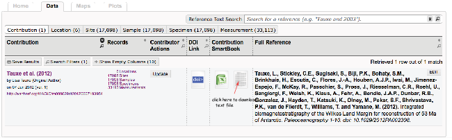
Unpack the data using the program in download_magic.py. This will unpack the data into the different holes. Change directories into Location_2 (which contains the data for Hole U1359A). Or, you can use the data in the ani_depthplot directory of the example data files.
will create the plot:
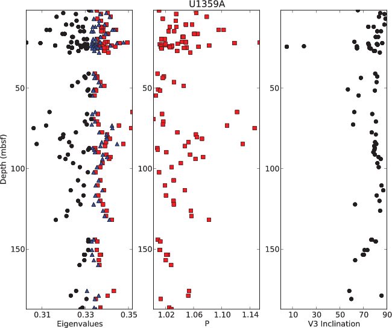
Samples were collected from the eastern margin a dike oriented with a bedding pole declination of 110∘ and dip of 2∘. The data have been imported into a rmag_anisotropy formatted file named dike_anisotropy.txt.
Make a plot of the data using aniso_magic.py. Use the site parametric bootstrap option and plot out the bootstrapped eigenvectors. Draw on the trace of the dike.
These things are done in this session:
which produced these plots:
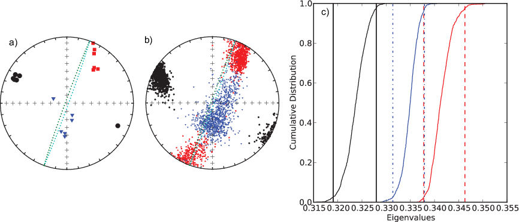
The specimen eigenvectors are plotted in the left-hand diagram with the usual convention that squares are the V 1 directions, triangles are the V 2 directions and circles are the V 3 directions. All directions are plotted on the lower hemisphere. The bootstrapped eigenvectors are shownin the middle diagramt. Cumulative distributions of the bootstrapped eigenvalues are shown to the right with the 95% confidence bounds plotted as vertical lines. It appears that the magma was moving in the northern and slightly up direction along the dike.
There are more options to aniso_magic.py that come in handy. In particular, one often wishes to test if a particular fabric is isotropic (the three eigenvalues cannot be distinguished), or if a particular eigenvector is parallel to some direction. For example, undisturbed sedimentary fabrics are oblate (the maximum and intermediate directions cannot be distinguished from one another, but are distinct from the minimum) and the eigenvector associated with the minimum eigenvalue is vertical. These criteria can be tested using the distributions of bootstrapped eigenvalues and eigenvectors.
The following session illustrates how this is done, using the data in the test file sed_anisotropy.txt in the aniso_magic directory.
which makes these plots:
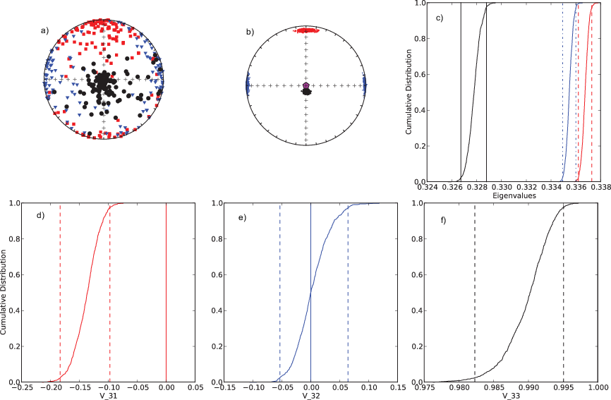
The top three plots are as in the dike example before, showing a clear triaxial fabric (all three eigenvalues and associated eigenvectors are distinct from one another. In the lower three plots we have the distributions of the three components of the chosen axis, V 3, their 95% confidence bounds (dash lines) and the components of the designated direction (solid line). This direction is also shown in the equal area projection above as a red pentagon. The minimum eigenvector is not vertical in this case.
The program apwp.py calculates paleolatitude, declination, inclination from a pole latitude and longitude based on the paper Besse and Courtillot (2002; see Chapter 16 for reference and complete discussion). Use it to calculate the expected direction for 100 million year old rocks at a locality in La Jolla Cove (Latitude: 33N, Longitude 117W). Assume that we are on the North American Plate! (Note that there IS no option for the Pacific plate in the program apwp.py, and that La Jolla was on the North American plate until a few million years ago (6?).
Note that as with many PmagPy programs, the input information can be read from a file and the output can be put in a file. For example, we put the same information into a file, apwp_example.dat and use this syntax:
Anisotropy of thermal remanence (ATRM) is similar to anisotropy of anhysteretic remanence (AARM) and the procedure for obtaining the tensor is also similar. Therefore, the program atrm_magic.py is quite similar to aarm_magic.py. However, the SIO lab procedures for the two experiments are somewhat different. In the ATRM experiment, there is a single, zero field step at the chosen temperature which is used as a baseline. We use only six positions (as opposed to nine for AARM) because of the additional risk of alteration at each temperature step. The positions are also different:
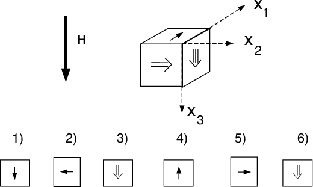
The file atrm_magic_example.dat in the atrm_magic directory is an SIO formatred data file containing ATRM measurement data done in a temperature of 520∘C. Note the special format of these files - the treatment column (column #2) has the temperature in centigrade followed by either a “00” for the obligatory zero field baseline step or a “10” for the first postion, and so on. These could also be ‘0‘ and ‘1’, etc..
Use the program sio_magic.py to import the ATRM data into the MagIC format. The DC field was 40 μT. The naming convention used option # 1 (see help menu). Then use the program atrm_magic.py to calculate the best-fit tensor and write out the MagIC tables: rmag_anisotropy and rmag_results formatted files. These files can be used to correct remanence data in a pmag_specimens format table (e.g, intensity data) for the effects of remanent anisotropy (e.g., using the program thellier_magic_redo.py.
Here is an example transcript:
Many paleomagnetists save orientation information in files in this format:
| Sample | Azimuth | Plunge | Strike | Dip |
Note that there are many options for relating sample names to site names and we used the first convention that has a single character at the end of the site name to designate each sample (e.g., is132d is sample ’d’ from site is132). We have also specified certain field sampling and orientation method codes (-mcd), here field sampling-field drilled (FS-FD) and sample orientation-Pomeroy (SO-POM). The location was “Northern Iceland”. See the help menu for more options.
Another way to do this is to use the orientation_magic.py program which allows much more information to be imported.
Use the program b_vdm to convert an estimated paleofield value of 33 μT obtained from a lava flow at 22∘ N latitude to the equivalent Virtual Dipole Moment (VDM) in Am2. Put the input information into a file called vdm_input.dat and read from it using standard input:
Python has a complete map plotting package and PmagPy has a utility for making simple base maps for projects. Site location data imported for example using orientation_magic.py into an er_sites formatted text file can be plotted using basemap_magic.py. There are many options, so check the help message for more details. Note that if you want to use high resolution, you must install the high resolution continental outlines as described on the PmagPy website.
As an example, use the program basemap_magic.py to make a simple basemap plot with site locations in a MagIC er_sites.txt formatted file named basemap_example.txt.
which makes this plot:
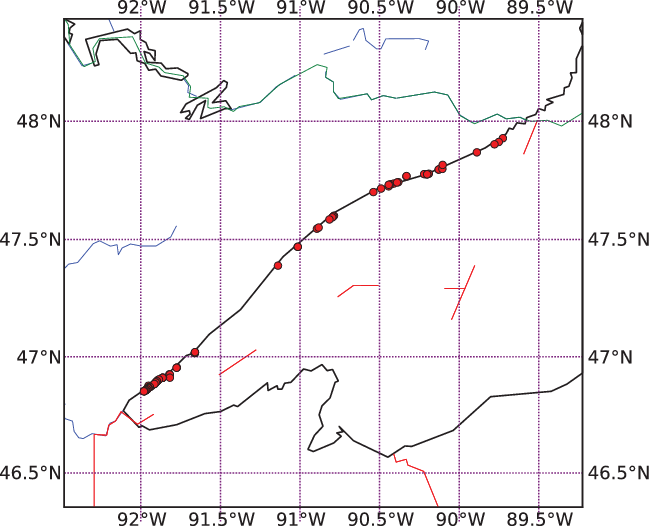
Use the buttons at the bottom of the plot to resize or save the plot in the desired format.
[Chapter 8] and [MagIC]
It is often useful to plot measurements from one experiement against another. For example, rock magnetic studies of sediments often plot the IRM against the ARM or magnetic susceptibility. All of these types of measurements can be imported into a single magic_measurements formatted file, using magic method codes and other clues (lab fields, etc.) to differentiate one from another. Data were obtained from a Paleogene core from 28∘S for a relative paleointensity study. IRM, ARM, magnetic susceptibility and remanence data were uploaded to the MagIC database. The magic_measurements formatted file for this study is saved in core_measurements.txt.
Use the program biplot_magic.py to make a biplot of magnetic susceptibility against ARM. Note that the program makes use of the MagIC method codes which are LT-IRM for IRM, LT-AF-I for ARM (AF demagnetization, in a field), and LP-X for magnetic susceptibility.
First, to find out which data are available, run the program like this:
These are the method codes for AF demagnetization of NRM, ARM, IRM and susceptibility measurements respectively. So to make a plot of susceptibility against ARM, we would run the program again:
which makes the plot:
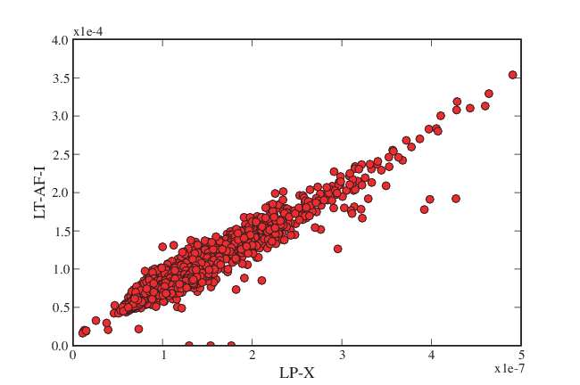
The program bootams.py calculates bootstrap statistics for anisotropy tensor data in the form of:
x11 x22 x33 x12 x23 x13
It does this by selecting para-data sets and calculating the Hext average eigenparameters. It has an optional parametric bootstrap whereby the σ for the data set as a whole is used to draw new para data sets. The bootstrapped eigenparameters are assumed to be Kent distributed and the program calculates Kent error ellipses for each set of eigenvectors. It also estimates the standard deviations of the bootstrapped eigenvalues.
Use this to calculate the bootstrapped error statistics for the data in file bootstrap_examples.data:
Use the program cart_dir to convert these cartesian coordinates to geomagnetic elements:
| x1 | x2 | x3 |
| 0.3971 | -0.1445 | 0.9063 |
| -0.5722 | 0.0400 | -0.8192 |
To use the interactive option:
To read from a file:
Paleointensity experiments are quite complex and it is easy to make a mistake in the laboratory. The SIO lab uses a simple chart that helps the experimenter keep track of in-field and zero field steps and makes sure that the field gets verified before each run. You can make a chart for an infield-zerofield, zerofield-infield (IZZI) experiment using the program chartmaker.py. Make such a chart using 50∘C steps up to 500∘C followed by 10∘C steps up to 600∘C.
The chart allows you to fill in the file name in which the data were stored and the field value intended for the infield steps. The designations ‘Z’, ‘I’, ’T’, ’and ’P’ are for zero-field, in-field, pTRM tail checks and pTRM checks respectively. There are fields for the date of the runs, the fields measured in different zones in the oven prior to the start of the experiment, and the start and stop times. The numbers, e.g., 100.1 are the treatment temperatures (100) followed by the code for each experiment type. These get entered in the treatment fields in the SIO formatted magnetometer files (see sio_magic.py.
It is sometimes useful to measure susceptibility as a function of temperature, applied field and frequency. Here we use a data set that came from the Tiva Canyon Tuff sequence (see Carter-Stiglitz, 2006). Use the program chi_magic.py to plot the data in the magic_measurements formatted file: chi_magic_example.dat.
produced this plot:
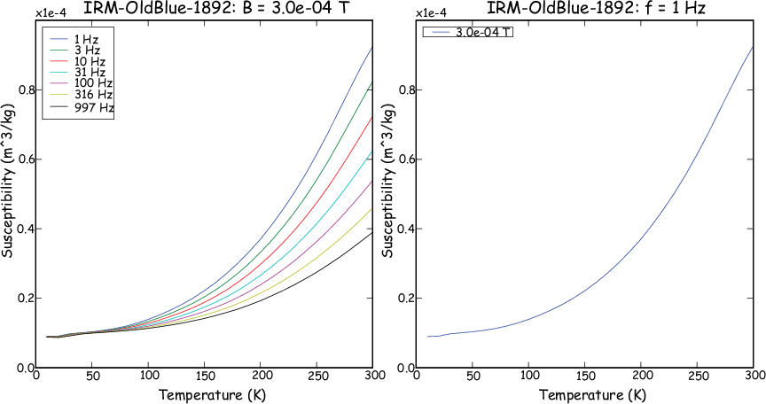
You can see the dependence on temperature, frequency and applied field. These data support the suggestion that there is a strong superparamagnetic component in these specimens.
MagIC tables have many columns only some of which are used in a particular instance. So combining files of the same type must be done carefully to ensure that the right data come under the right headings. The program combine_magic.py can be used to combine any number of MagIC files from a given type. For an example of how to use this program, see Example 4.2.
Most paleomagnetists use some form of Fisher Statistics to decide if two directions are statistically distinct or not (see Chapter 11 for a discussion of those techniques. But often directional data are not fisher distributed and the parametric approach will give misleading answers. In these cases, one can use a boostrap approach, described in detail in [Chapter 12]. Here we use the program common_mean.py for a bootstrap test for common mean to check whether two declination, inclination data sets have a common mean at the 95% level of confidence. The data sets are: common_mean_ex_file1.dat and common_mean_ex_file2.dat. But first, let’s look at the data in equal area projection using the program eqarea.py.
The session:
generates two .svg formatted files that look like these:
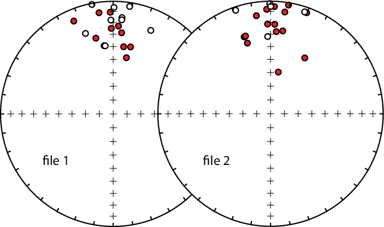
Now let’s look at the common mean problem using common_mean.py.
The three plots are:
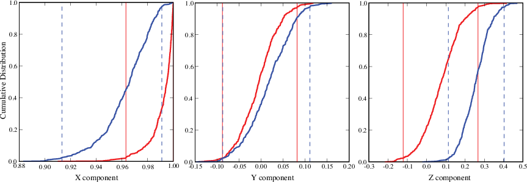
These suggest that the two data sets share a common mean.
Now compare the data in common_mean_ex_file1.dat with the expected direction at the 5∘N latitude that these data were collected (Dec=0, Inc=9.9).
To do this, follow this transcript:
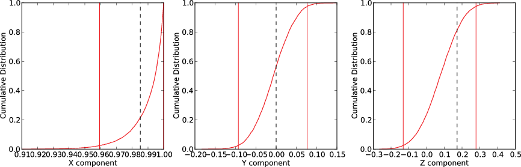
Apparently the data (cumulative distribution functions) are entirely consistent with the expected direction (dashed lines are the cartesian coordinates of that).
[Chapter 16 and Appendix A.3.5.]
Use the program cont_rot.py to make an orthographic projection with latitude = -20∘ and longitude = 0∘ at the center of the African and South American continents reconstructed to 180 Ma using the Torsvik et al. (2008) poles of finite rotation. Do this by first holding Africa fixed. Move the output plot to fixed_africa.svg. Then make the plot for Africa adjusted to the paleomagnetic reference frame. Make the continental outlines in black lines and set the resolution to ’low’.
These commands generated the following plots (first on left, second on right):

This is a handy little script that turns Windows or Mac file formatted files (not Word or other proprietary formats) into Unix file format. It does the change in place, overwriting the original file.
If one of the MagIC related programs in PmagPy created a very lean looking er_samples.txt file (for example using azdip_magic.py) and you need to add more information (say, latitude, longitude, lithology, etc.), you can convert the er_samples.txt file into an orient.txt file format, edit it in, for example Excel, and then re-import it back into the er_samples.txt file format. Try this on the er_samples formatted file in the convert_samples directory, convert_samples_example.dat.
Use the program core_depthplot.py to plot various measurement data versus sample depth. The data must be in the MagIC data formats. The program will plot whole core data, discrete sample at a bulk demagnetization step, data from vector demagnetization experiments, and so on. There are many options, so check the help menu before you begin.
We can try this out on some data from DSDP Hole 522, measured by Tauxe and Hartl (1997). These can be downloaded and unpacked (see download-magic.py for details, or you can try it out on the data files in the directory core_depthplot. You must specify a lab-protocol (LP) for plotting. In this example, we will plot the alternating field (AF) data after the 15 mT step. The magnetizations will be plotted on a log scale and, as this is a record of the Oligocene, we will plot the Oligocene time scale, using the calibration of Gradstein et al. (2004), commonly referred to as “GTS04” for the the Oligocene. We are only interested in the data between 50 and 150 meters (the -d option sets this) and we will suppress the declinations (-D).
will produce the plot:
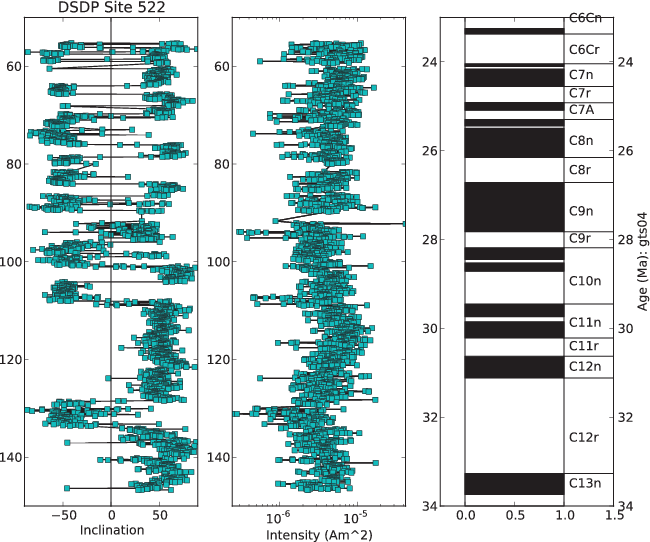
Use the program curie.py to interpret curie temperature data in the example file curie_example.dat. Use a smoothing window of 10∘.
which generates these plots:
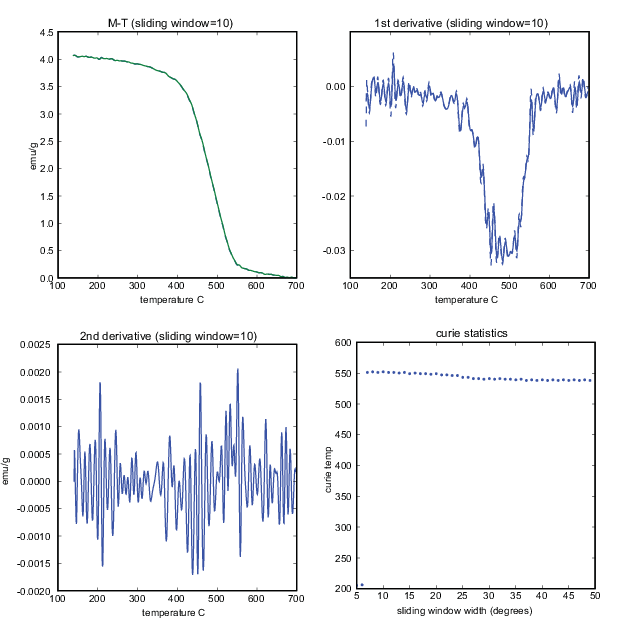
The MagIC database allows documentation of which criteria were used in selecting data on a specimen, sample or site level and to easily apply those criteria (and re-apply them as they change) in preparing the different tables. These choices are stored in the pmag_criteria table in each MagIC project directory (see MagIC.py documentation.
Certain PmagPy programs use the datafile pmag_criteria.txt to select data (for example thellier_magic.py and specimens_results_magic.py). To customize these criteria for your own data sets, you can use the program customize_criteria.py. This program is also called by the MagIC.py GUI under the Utilities menu. Try it out on pmag_criteria.txt. This is a “full vector” set of criteria - meaning that it has both directions and intensity flags set. Change the specimen_alpha95 cutoff to 180. from whatever it is now set to. Save the output to a new file named new_criteria.txt.
Note that the default place for the PmagPy programs to look for criteria is in pmag_criteria.txt, so you should probably rename the new one that for it to take effect as your new default.
Use the program dayplot_magic.py to make Day, Squareness-Coercivity and Squareness-Coercivity of Remanence plots from the rmag_hyseresis formatted data in dayplot_magic_example.dat.
The session:
gives the plots:
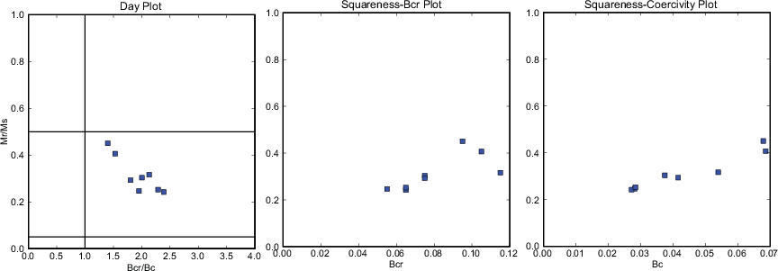
Paleomagnetic data are frequently plotted in equal area projection. PmagPy has several plotting programs which do this (e.g., eqarea.py, but occasionally it is handy to be able to convert the directions to X,Y coordinates directly, without plotting them at all. The program di_eq.py does this. Here is an example transcript of a session using the datafile di_eq_example.dat:
[Chapter 9] and Changing coordinate systems
Use the programs di_geo.py to convert D = 8.1,I = 45.2 from specimen coordinates to geographic adjusted coordinates. The orientation of laboratory arrow on the specimen was: azimuth = 347; plunge = 27. di_geo.py works in the usual three ways (interactive data entry, command line file specification or from standard input. So for a quickie answer for a single specimen, you can use the interactive mode:
which spits out our answer of Declination = 5.3 and inclination = 71.6.
For more data, it is handy to use the file entry options. There are a bunch of declination, inclination, azimuth and plunge data in the file di_geo_example.dat in the di_geo directory. First look at the data in specimen coordinates in equal area projection, using the program eqarea.py. Note that this program only pays attention to the first two columns so it will ignore the orientation information.
which should look like this:
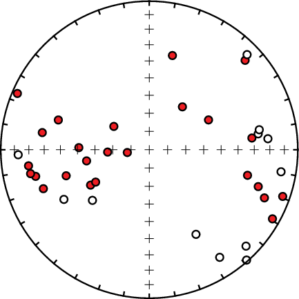
The data are highly scattered and we hope that the geographic coordinate system looks better! To find out try:
which looks like this:
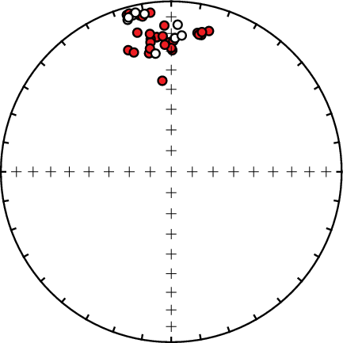
These data are clearly much better grouped.
Generate a Fisher distributed set of data from a population with a mean direction of D = 0,I = 42 using the program fishrot.py. Calculate the mean direction of the data set using gofish.py. Now use the program di_rot.py to rotate the set of directions to the mean direction. Look at the data before and after rotation using eqarea.py.
which generates plots like these:
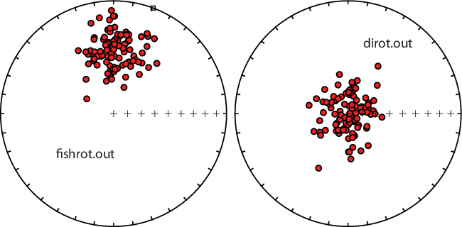
Note that every instance of fisher.py will draw a different sample from a Fisher distribution and your exact plot and average values will be different in detail every time you try this (and that’s part of the fun of statistical simulation.)
[Chapter 9] and Changing coordinate systems
Use the program di_tilt.py to rotate a direction of Declination = 5.3 and Inclination = 71.6 to “stratigraphic” coordinates. The strike was 135 and the dip was 21. The convention in this program is to use the dip direction, which is to the “right” of this strike.
Here is a session with di_tilt.py using the interactive option:
Try the same on the data file saved as di_tilt_example.dat using the command line -f switch:
Use the program di_vgp to convert the following:
| D | I | λs (N) | ϕs (E) |
| 11 | 63 | 55 | 13 |
| 154 | -58 | 45.5 | -73 |
Here is a transcript of a typical session using the command line option for file name entry:
Calculate the expected inclination at a paleolatitude of 24∘S.
Calculate the paleolatitude for an average inclination of 23∘.
Use the program dir_cart.py to convert the following data from declination D, inclination I and intensity M to x1,x2,x3.
| D | I | M (μAm2) |
| 20 | 46 | 1.3 |
| 175 | -24 | 4.2 |
You can enter D,I,M data into data file, then running the program by typing what is after the prompts (%) [ the other stuff is computer responses] :
Or you could use dir_cart.py interactively as in:
Use dmag_magic.py to plot out the decay of all alternating field demagnetization experiments in the magic_measurements formatted file in dmag_magic_example.dat. Repeat for all thermal measurements, but exclude all the data acquired during the thermal but not paleointensity experiments. Try this at the location level and then at the site level.
Here is a transcript of a session:
which produced these plots:
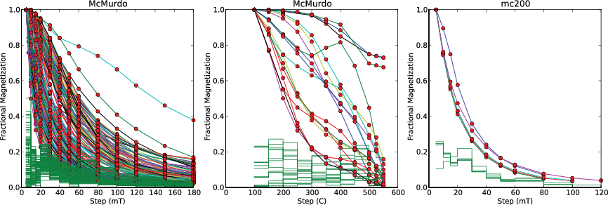
[MagIC]
This program unpacks .txt files downloaded from the MagIC database into individual directories for each location into which the individual files for each table (e.g., er_locations.txt, magic_measurements.txt, pmag_results.txt and so on) get placed. As an example, go to the MagIC data base at http://earthref.org/MAGIC/search. Enter “Tauxe and 2004” into the Reference Text Search field. Show you several references. Look for the one for Tauxe, L., Luskin, C., Selkin, P., Gans, P. and Calvert, A. (2004). Download the text file under the ”Contribution SmartBook” column and save it to your desktop. Make a folder into which you should put the downloaded txt file called MagIC_download and move the file into it. Now use the program download_magic.py to unpack the .txt file (zmab0083201tmp03.txt).
You can change directories each Location directory (in this case only one) and examine the data using the PmagPy programs (e.g., zeq_magic.py).
Print out the eigenparameters in the file eigs_s_example.dat and then convert them to tensor data in the .s format (x11,x22,x33,x12,x13,x23).
This session uses the unix utility cat to print the data. [ You could use the Ms-Dos form type in a Windows command line window.] Then, it prints the tensor data to the screen.
[Appendix ??]
Data are frequently published as equal area projections and not listed in data tables. These data can be digitized as x,y data (assuming the outer rim is unity) and converted to approximate directions with the program eq_di.py. To use this program, install a graph digitizer (GraphClick from http://www.arizona-software.ch/graphclick/ works on Macs ).
Digitize the data from the equal area projection saved in the file eqarea.png in the eq_di directory. You should only work on one hemisphere at a time (upper or lower) and save each hemisphere in its own file. Then you can convert the X,Y data to approximate dec and inc data - the quality of the data depends on your care in digitizing and the quality of the figure that you are digitizing.
Try out eq_di.py on your datafile, or use eq_di_example.dat which are the digitized data from the lower hemisphere and check your work with eqarea.py. You should retrieve the lower hemisphere points from the eqarea.py example.
NB: To indicate that your data are UPPER hemisphere (negative inclinations), use the -up switch.
[Appendix ??]
This program takes declination, inclination data and converts them to X,Y pairs using the equal area projection. Test this out with di_eq_example.dat. These are the lower hemisphere data from di_example.dat.
You can verify the process by comparing the plot generated for these data using eqarea.py with the original png file.
Use the program fishrot.py to generate a Fisher distiributed set of data drawn from a distribution with mean declination of 42∘ and a mean inclination of 60∘. LSave this to a file called it fishrot.out. Use eqarea.py to plot an equal area projection of the data.
which produces the plot:
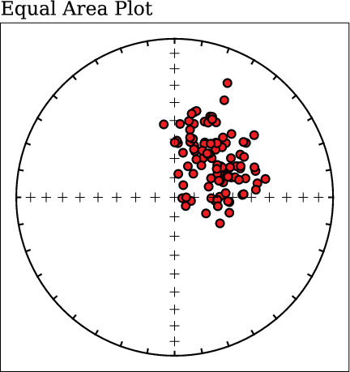
[Chapters 11] and [Chapter 12]
Use the program tk03.py to generate a set of simulated data for a latitude of 42∘N including reversals. Then use the program eqarea_ell.py to plot an equal area projection of the directions in di_example.txt and plot confidence ellipses. Here is an example for Bingham ellipses.
which produces a plot like this:
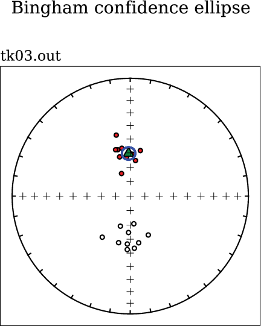
Other ellipses are Kent, Fisher and bootstrapped ellipses. Check the documentation for details.
Follow the instructions for downloading and unpacking a data file from the MagIC database or use the file in the download_magic directory already downloaded from the MagIC website. Plot the directional data for the study from the pmag_results.txt file along with the bootstrapped confidence ellipse.
makes this plot:
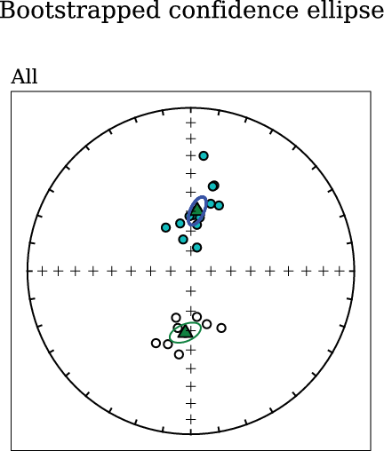
The information printed to the window is the pmag_result_name in the data table, the method codes (here the geochronology method, the type of demagnetization code and the types of demagnetization experiments), and each site mean declination inclination. The information following “mode 1” are the bootstrapped ellipse parameters.
Some data are study averages and some are individual sites.
Use magic_select.py to select only the individual site data. Try the
which produces plots like:
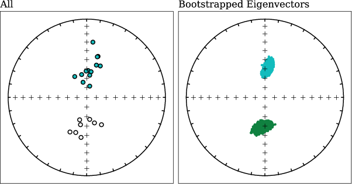
ADD SOMETHING HERE?
A data file was prepared using tk03.py to simulate directions at a latitude of 42∘. Use the program dipole_pinc.py to find what the expected inclination at this latitude is!
The data were “flattened” using the formula tanIo = f tanIf to simulate inclination error and saved in a data file find_EI_example.dat in the find_EI directory. Use the program find_EI.py to find the optimum flattening factor f which, when used to “unflatten” the data yields inclination and elongation (ratio of major and minor eigenvalues of orientation matrix, see the section on eigenvalues in the textbook) most consistent with the TK03.GAD paleosecular variation model of Tauxe and Kent (2004).
which produces these plots:
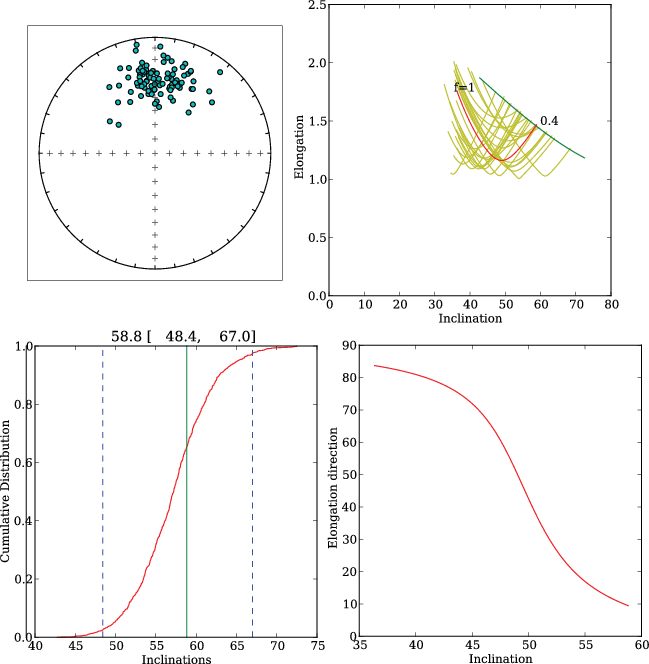
In this example, the original expected inclination at paleolatitude of 42 (61∘) is recovered within the 95% confidence bounds.
Draw a set of 10 directions from a Fisher distribution with a κ of 30 using fisher.py:
You could plot the output with, e.g., eqarea.py.
Note that every instance of this program draws a different distribution, so yours will look different in detail.
Test whether a set of 100 data points generated with fisher.py are in fact Fisher distributed by using a Quantile-Quantile plot:
produces these plots:
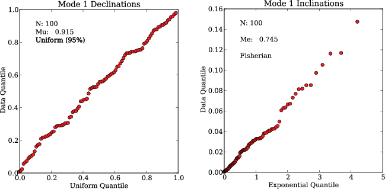
which support a Fisher distribution for these data.
Draw a set of 5 directions drawn from a Fisher distribution with a true mean declination of 33, a true mean inclination of 41, and a κ of 50:
Use foldtest.py to perform a foldtest on the data in foldtest_example.dat.
which gives the plots:
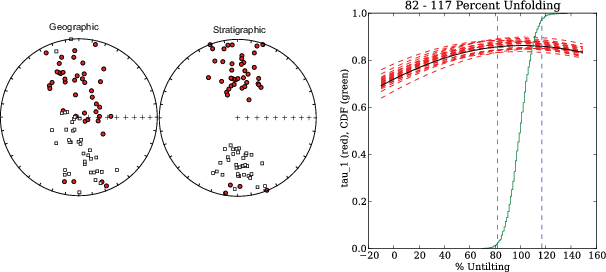
Apparently these directions were acquired prior to folding because the 95% confidence bounds on the degree of untilting required for maximizing concentration of the data (maximum in principle eigenvalue) τ1 of orientation matrix (see the section on eigenvalues in the textbook) includes 100%.
Use gaussian.py to generate a set of 100 normally distributed data points drawn from a population with a mean of 10.0 and standard deviation of 30. Save it to a file named gauss.out.
You can check the sample mean and standard deviation with stats.py or make a histogram of the data withhistplot.py
Use the dataset generated in the eqarea_ell.py example. Calculate Bingham parameters using gobing.py instead of within the plotting program:
which according to the help message from gobing.py is:
mean dec, mean inc, Eta, Deta, Ieta, Zeta, Zdec, Zinc, N
Draw a set of 10 directions drawn from a Fisher distribution with a true mean declination of 15, a true mean inclination of 41, and a κ of 50 and save it to a file, then use gofish.py to calculate the Fisher parameters:
which according to the help message from gofish.py -h is: mean dec, mean inc, N, R, k, a95, csd. Your results will vary because every instance of fishrot.py draws a different sample from the Fisher distribution.
Draw a set of 20 data points from a TK03.GAD distibution predicted for a latitude of 42∘N (see 14), without reversals. Calculate kent parameters using gokent.py
which according to the help message from gobing.py is: mean dec, mean inc, Eta, Deta, Ieta, Zeta, Zdec, Zinc, N
[Chapter 12] [Chapter 12]
Draw a set of 20 data points from a TK03.GAD distibution predicted for a latitude of 42∘N (see 14), including reversals. Calculate the eigenparameters of the orientation matrix (the principal components) using goprinc.py
which according to the help message from gobing.py is: τ1V 1D,V 1I,τ2V 2DV 2Iτ3V 3DV 3I,N.
ADD SOMETHING HERE?
Make a histogram of the data generated with the gaussian.py program.
which makes a plot similar to:
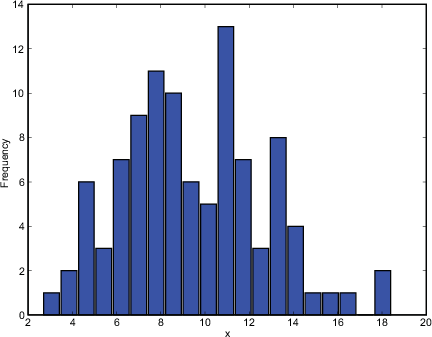
[Chapters 5, 7 & Appendices ??, ??]
Plot the magic_measurements formatted hysteresis experimental data created by
agm_magic.py. Use the program hysteresis_magic.py.
which makes the plots:
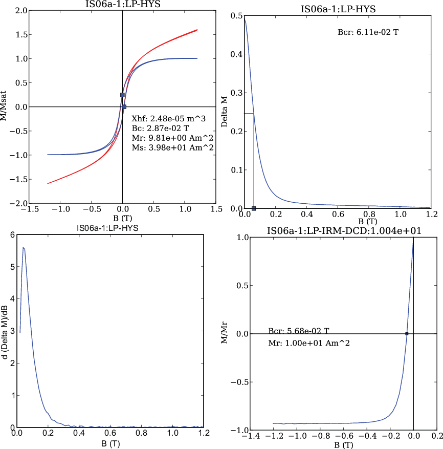
[Chapter 2][Chapter 2]
Use the program igrf.py to estimate the field on June 1, 1995 in Amsterdam, The Netherlands (52.5∘ N, 5∘E).
Now read from the file igrf_example.dat which requests field information for near San Diego for the past 3000 years. The program will evaluate the field vector for that location for dates from 1900 to the present using the IGRF/DGRF coefficients in the IGRF-11 model available from: http://www.ngdc.noaa.gov/IAGA/vmod/igrf.html. For the period from 1000 BCE to 1800, the program uses the CALS3k.4b of Korte and Constable (2011). available at: http://earthref.org/ERDA/1142/. Prior to that and back to 8000 BCE, the program uses the coefficients of Korte et al., 2011 for the CALS10k.1b, available at: http://earthref.org/ERDA/1403/
You can plot the output using, for example plotXY.py:
which produces a plot like this: 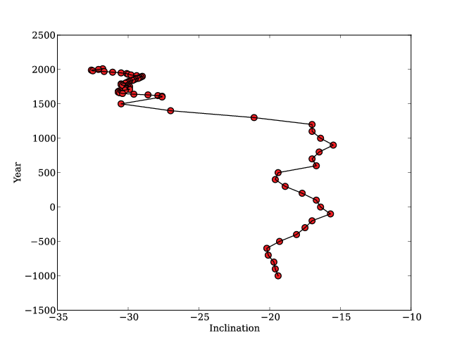
Use the program incfish.py to calculate average inclination for inclination only data simulated by fishrot.py for an average inclination of 60∘. If you save the declination, inclination pairs, you can compare the incfish.py answer with the Fisher mean. The datafile incfish_example_di.dat has the declination, inclination pairs and incfish_example_inc.dat has just the inclinations.
The output for incfish.py is: [gaussian] mean inc, Fisher inc, N,R,k,α95. You can see that the incfish.py result is much closer to the Fisherian result than the gaussian mean is.
Someone took a set of samples from a dike margin in the Troodos Ophiolite and measured their anisotropy of magnetic susceptibility on an a Kappabridge KLY 2.0 instrument in the SIO laboratory. The sequence of measurement positions is that recommended by Jelinek (1977):
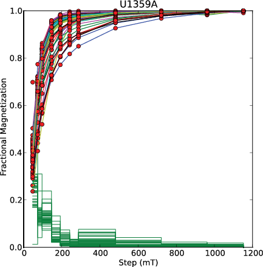
The 15 measurements for each specimen, along with orientation information and the specimen name were saved in the file k15_example.dat. Convert these to the MagIC format using the program k15_magic.py:
You can plot the output of this example (default file rmag_anisotropy.txt) using the program aniso_magic.py.
Use k15_s.py to calculate the best-fit tensor elements and residual error for the data in the file k15_example.dat (same file as for k15˙magic.py. These are: the specimen name, azimuth and plunge and the strike and dip, followed by the 15 measurements made using the Jelinek 1977 scheme shown in the k15˙magic.py example. Calculate the .s data in specimen, geographic and tilt adjusted coordinates:
Some of the AGICO magnetic susceptibility instrument software versions (e.g., SUFAR ver.1.2) save data in an ascii file like that in:
kly-asc_magic_example.txt.
These can be imported into the MagIC format using the program kly-asc_magic.py as follows:
This command will create a number of files needed by the MagIC database; these can be plotted using aniso_magic.py or imported into the MagIC console for further editing.
The program AMSSpin available for downloading from http://earthref.org/ERDA/940/ generates data for the Kappabridge KLY4S spinning magnetic susceptibility instrument as described by Gee et al. (2008). Output files are in the format of the file kly4s_magic_example.dat. One option is for orientation information to be output as an azdip formatted file (see azdip_magic.py.) The AMS data files can be imported into the MagIC format with kly4s_magic.py as follows:
This command will create a number of files needed by the MagIC database and the data can be plotted using aniso_magic.py.
[Chapter 11, Appendix C2.2 & MagIC
This program will take pmag_specimen formatted MagIC files (for example, generated by zeq_magic.py) and plot data by site, combining best-fit lines and best-fit planes using the method described in Appendix C2.2. Try this out on the data from the San Francisco Volcanics, notorious for lightning strikes, published by Tauxe et al., 2003. These can be downloaded from the MagIC database from http://earthref.org/MAGIC/m000629dt20061213090720/ and unpacked with download_magic.py.
which generated this figure:
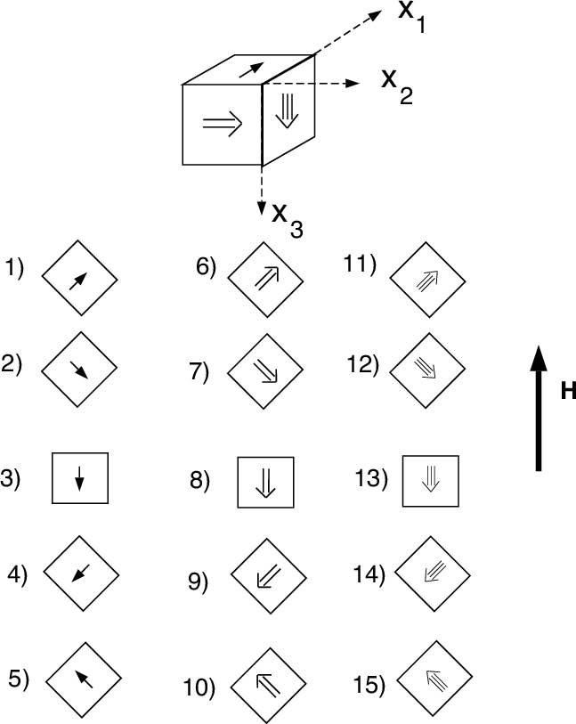
ADD SOMETHING HERE
ADD SOMETHING HERE
ADD SOMETHING HERE
ADD SOMETHING HERE
The programs zeq_magic.py and thellier_magic.py make pmag_specimen formatted files which can be used for further data reduction either by plotting or contributing to site means, etc. Sometimes it is useful to redo the calculation, using anisotropy corrections or a change in coordinate systems, etc. The re-doing of these specimen level calculations is handled by, for example zeq_magic_redo.py or thellier_magic_redo.py. These programs use magic_measurements formatted files and perform calculations as dictated by a “redo” file which has the specimen name, bounds for calculation and, in the case of the demagnetization data interpretation, the type of calculation desired (best-fit lines with directional estimation magic method code:DE-BFL, best-fit planes with those with magic method code DE-BFP, etc.).
Make “redo” files from the existing pmag_specimen formatted file in the data files downloaded from the MagIC website as in download_magic.py and examine them as follows:
Note that the temperature steps are in kelvin and the AF demagnetization steps are in Tesla as required in the MagIC data base.
After making NRM measurements, it is frequently useful to look at the directions in equal area projection to get a “quick look” at the results before proceeding to step wise demagnetization. The data in the magic_measurements files are usually in specimen coordinates - not geographic, so we need a way to rotate the data into geographic and or stratigraphic coordinates and save them in a pmag_specimens formatted file for plotting with eqarea_magic.py. The program nrm_specimens_magic.py will do this for you.
Get into the directory you made for tshe download_magic.py example. Use nrm_specimens_magic.py to convert the NRM measurements in magic_measurements.txt to geographic coordinates saved in a file named nrm_specimens.txt. The orientation data are in the file er_samples.txt. Then plot the specimen directions for the entire study using eqarea_magic.py:
The first command created a file nrm_specimens.txt and the second created an equal area projection of the NRM directions in geographic coordinates which should look like this:
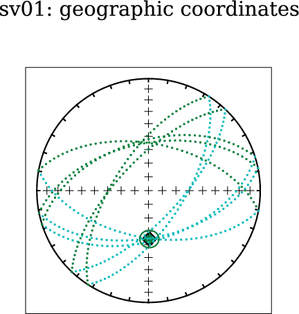
ADD
[Chapter 9] and MagIC help files
There is an astounding number of different ways that paleomagnetists document data in the field and in the lab. The MagIC database expects sample orientations to be the azimuth and plunge of the fiducial arrow used for measurement (see Chapter 9) and the orientation of the bedding to be dip direction and downward dip. There are also a number of method codes that describe sampling and orientation procedures (see http://earthref.org/MAGIC/methods.htm for a complete description).
To make the conversion from notebook information to the MagIC format, you can create a tab delimited file (orient.txt format). This file should have all the information for a single location sensu MagIC. A location is a stratigraphic section, a sampling region, an drill core, and so on. MagIC doesn’t really care what your location name is, but use the same location name every time you are asked for it, because it really ties your dataset together. The first line of the orient.txt file should be a header with the word ‘tab’ in the first column and the desired location name in the second column.
The next row has the names of the columns . The required columns are: sample_name, mag_azimuth, field_dip, date, lat, long, sample_lithology, sample_type, sample_class) but there are a number of other possible columns (e.g., Optional Fields in orient.txt formatted files are: [date, shadow˙angle, hhmm], date, stratigraphic˙height, [bedding˙dip˙direction, bedding˙dip], [image˙name, image˙look, image˙photographer], participants, method˙codes, site˙name, and site˙description, GPS˙Az). Nothe that column names in brackets must be supplied together and the data for stratigraphic˙height are in meters.
It is handy at this point to supply the lithology, type and material classification information required by MagIC (see MagIC for a brief list. Note that lithology, class and type are all controlled vocabularies listed at http://earthref.org/MAGIC/shortlists.htm. It is also possible to put in stratigraphic height, sun compass, differential GPS orientation information, flag sample orientations as suspect, document digital field photograph names, and who was involved with the sampling.
For Sun Compass measurements, supply the shadow˙angle, date and time. The date must be in mm/dd/yy format. Be sure you know the offset to Universal Time as you will have to supply that later. Also, only put data from one time zone in a single file. The shadow angle should follow the convention shown in the figure:
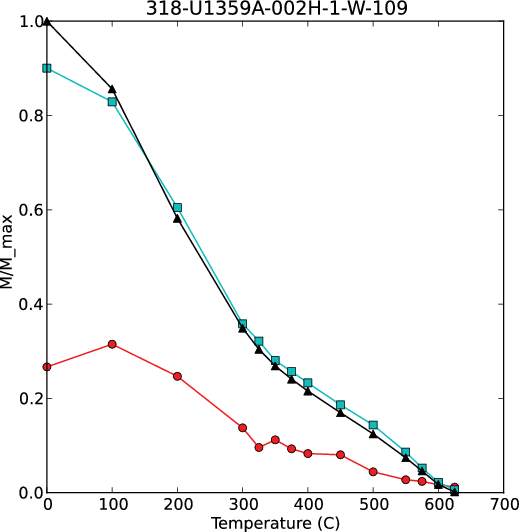
There are options for different orientation conventions (drill direction with the Pomeroy orientation device [drill azimuth and hade] is the default), different naming conventions and a choice of whether to automatically calculate the IGRF value for magnetic declination correction, supply your own or ignore the correction. The program generates er_samples.txt, er_sites.txt files. Be warned that existing files with these names will be overwritten.
All images, for example outcrop photos are supplied as a separate zip file. image˙name is the name of the picture you will import, image˙look is the ”look direction” and image˙photographer is the person who took the picture. This information will be put in a file named er˙images.txt and will ultimately be read into the er˙image table in the console where addiional information must be entered (keywords, etc.).
Often, paleomagnetists note when a sample orientation is suspect in the field. To indicate that a particular sample may have an uncertainty in its orientation that is greater than about 5o, enter SO-GT5 in the method˙codes column and any other special codes pertaining to a particular sample from the method codes table. Other general method codes can be entered later. Note that unlike date and sample˙class, the method codes entered in orient.txt pertain only to the sample on the same line.
If there is not a supported relationship between the sample˙name and the site˙name (see sample naming schemes below), you can enter the site name under site˙name for each sample. For example, you could group samples together that should ultimately be averaged together (multiple ”sites” that sampled the same field could be grouped under a single ”site name” here.
Samples are oriented in the field with a ”field arrow” and measured in the laboratory with a ”lab arrow”. The lab arrow is the positive X direction of the right handed coordinate system of the specimen measurements. The lab and field arrows may not be the same. In the MagIC database, we require the orientation (azimuth and plunge) of the X direction of the measurements (lab arrow). Here are some popular conventions that convert the field arrow azimuth (mag˙azimuth in the orient.txt file) and dip (field˙dip in orient.txt) to the azimuth and plunge of the laboratory arrow (sample˙azimuth and sample˙dip in er˙samples.txt). The two angles, mag˙azimuth and field˙dip are explained below.
[1] Standard Pomeroy convention of azimuth and hade (degrees from vertical down) of the drill direction (field arrow). sample˙azimuth = mag˙azimuth; sample˙dip =-field˙dip.

2] Field arrow is the strike of the plane orthogonal to the drill direction, Field dip is the hade of the drill direction. Lab arrow azimuth = mag˙azimuth-90o; Lab arrow dip = -field˙dip

[3] Lab arrow is the same as the drill direction; hade was measured in the field. Lab arrow azimuth = mag˙azimuth; Lab arrow dip = 90o-field˙dip.
[4] Lab arrow orientation same as mag˙azimuth and field˙dip.

[5] Same as AZDIP convention explained below - azimuth and inclination of the drill direction are mag˙azimuth and field˙dip; lab arrow is as in [1] above. field arrow are lab arrow azimuth is same as mag˙azimuth, Lab arrow dip = field˙dip-90o

[6] Lab arrow azimuth = mag˙azimuth-90o, Lab arrow dip = 90o-field˙dip, i.e., field arrow was strike and dip of orthogonal face:

Because of the ambiguity of strike and dip, the MagIC database uses the dip direction and dip where dip is positive from 0 → 180. Dips>90 are overturned beds.
Try to import the file orientation_example.txt. It has field information for a few sites. The samples were oriented with a Pomeroy orientation device (the default) and it is desirable to calculate the magnetic declination from the IGRF at the time of sampling (also the default). Sample names follow the rule that the sample is designated by a letter at the end of the site name (convention #1 - which is the default). So we do this by:
This program calculates best-fit lines, planes or Fisher averages through selected treatment steps. The file format is a simple space delimited file with specimen name, treatment step, intensity, declination and inclination. Calculate the best-fit line through the first ten treatment steps in data file zeq_example.txt:
According to the help message, this is: specimen name, calculation type, N, beg, end, MAD, declination and inclination. The calculation type is the MagIC method code for best-fit lines (see Appendix ??.)
ADD
ADD
ADD
Place the following declination, inclination α95 data in a space delimited file called
plotdi_a_example.dat.
| Dec | Inc | α95 |
| 39.1 | 37.5 | 5.0 |
| 30.3 | 36.2 | 15 |
| 29.9 | 45.6 | 7 |
| 34.6 | 28.4 | 3 |
Make a plot of these data using plotdi_a.py:
which makes the plot:
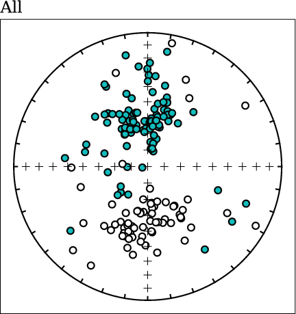
The program sio_magic.py allows conversion of the SIO format magnetometer files to the MagIC common measurements format. It allows various experiment types so read the help message. The SIO format is a space delimited file with the following columns:
| Specimen | treatment | intensity | declination | inclination | optional_string |
The treatment field is the temperature (in Centigrade), the AF field (in mT), the microwave strength, etc. For special experiments like IRM acquisition, the coil number of the popular ASC impulse magnetizaer can be specified if the treatment steps are in volts. The position for anisotropy experiments or whether the treatment is “in-field” or in zero field also require special formatting. The units of the intensity field are in cgs and the directions are relative to the ‘lab arrow’ on the specimen. Here are some examples of commonly used specimens and conversions from field arrow to lab arrow.
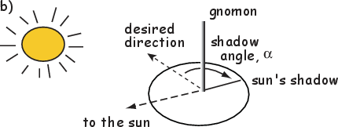
As an example, we use data from a study done on a set of samples from the location “Socorro”, including AF, thermal, and thellier experimental data. These were saved in sio_af_example.dat, sio_thermal_example.dat, and sio_thellier_example.dat respectively. The lab field for the thellier experiment was 25 μT and was applied along the specimen’s Z axis (phi=0,theta=90).] Convert the example files into magic_measurement formatted files with names like af_measurements.txt, etc. Then combine them together with combine_magic.py:
The data in these files can be plotted and interpreted with dmag_magic.py, zeq_magic.py, or thellier_magic.py depending on the experiment.
Note that there are more examples of data file formats and import schemes in the sections on anisotropy of anhysteretic and thermal remanences.